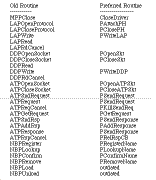
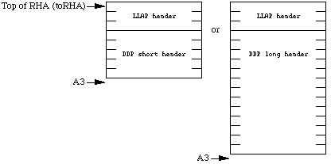
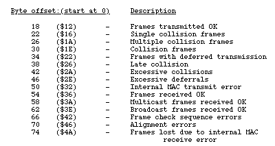
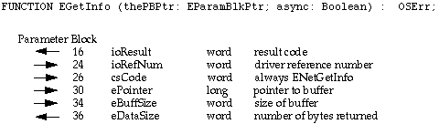

|
|
This Technical Note discusses the updates, and modifications to a number of
facets of the lower levels of AppleTalk Phase 2 since the release of Inside
Macintosh Volume VI. Topics range from discussion of the new Datagram
Delivery Protocol (DDP) layer calls to the AppleTalk Multiple Node Architecture
to a discussion at the driver level of the new Multivendor ADEV Architecture.
Most of the information presented here concerns AppleTalk version 56 through
58; however, additional material is presented to clarify and correct material
presented in other AppleTalk documentation relating to all versions of
AppleTalk.
Reordered subjects according to the order of the AppleTalk version in which the
feature was first implemented. Added a table of contents to make it easier to
find material. Added a discussion on Multivendor ADEV Architecture, the .TOKN
driver interface, plus information on making AppleTalk drivers compatible with
virtual memory under system software version 7.0.x. Added a description of the
change to the .ENET interface presented by the Apple SONIC based Ethernet
drivers. Added socket listener sample code plus corrections to the original
sample socket listener. Added AppleTalk version list.
[Feb 01 1994]
|
Overview
This technote is broken down into the following topics
- Where Can I Get the Latest Version of AppleTalk?
- Going, Going, Gone...
- The 'atkv' Gestalt Selector
- Sample Socket Listener
- Socket Listener Review
- Timing Considerations for LocalTalk
- Register Usage
- Socket Listener Overview
- Socket Listener Assembler Code
- Initializing the Socket Listener
- Using the Socket Listener
- The AppleTalk Transition Queue
- Bug with LAPAddATQ and LAPRmvATQ Glue Code
- Calling the AppleTalk Transition Queue
- Standard AppleTalk Transition Constants
- The Flagship Naming Service
- The ATTransNameChangeAskTask Transition
- The ATTransNameChangeTellTask Transition
- The ATTransCancelNameChange Transition
- System 7.0 Sharing Setup cdev / Flagship Naming Service Interaction
- AppleTalk Remote Access Network Transition Event
- The ATTransNetworkTransition Transition
- Network Transition Event for AppleTalk Remote Access
- Cable Range Change Transition Event
- The ATTransCableChange Transition
- The Speed Change Transition Event
- The ATTransSpeedChange Transition
- Sample Pascal Source to LAPMgrExists Function
- Sample AppleTalk Transition Queue Function
- Sample AppleTalk Transition Queue Function in C
- Sample AppleTalk Transition Queue Function in Pascal
- Multivendor ADEV Architecture
- Original Limitations
- .TOKN Driver Shell
- .TOKN Driver Basics
- Driver Considerations for Virtual Memory Limiting DeferUserFn Calls Implementing DeferUserFn
- .TOKN Application Programming Interface (API)
- Using L802Attach on Token Ring
- Writing the Protocol Handler for the LAP Manager
- .FDDI Application Programming Interface (API)
- SONIC-Based Ethernet Driver Software Interface Change
- EGetInfo Changes
- Distinguishing Apple's SONIC-Based Ethernet Systems
- Correction to the ENET.h Header File
- AppleTalk Multiple Node Architecture
- What Is It?
- Glue Code For Multinode Control Calls
- Things You Need to Know When Writing a Multinode Application
- AddNode (csCode=262)
- Receiving Packets
- Sending Datagrams Through Multinodes
- NetWrite (csCode=261)
- AppleTalk Remote Access Network Number Remapping
- Is There a Router on the Network?
- New for AppleTalk ADEVs
- AGetInfo (D0=3)
- ADelNode (D0=10)
- AGetNodeRef (D0=11)
- AOpen (D0=7)
- AClose (D0=8)
- AInstall (D0=1)
- AShutDown (D0=2)
- Receiving Packets
- Defending Multinode Addresses
- Corrections/Clarifications to the LAP Manager
- LRdDispatch (D0 = 1)
- LWrtInsert (D0 = 2)
- AppleTalk Version Information
- Contacting Apple Software Licensing
Back to top
Introduction
This Technote differs from previous revisions in that the subjects have been
reordered. The topics are presented according to the order of the AppleTalk
version in which the feature was first implemented. You can find new topics and
modifications to this Technote by looking for material set off by change bars
in the margins.
The first section in this Note presents a list of the original AppleTalk
Manager calls which are *NOT* being ported to the PowerPC platform. The list
includes the Preferred AppleTalk version of the function call, or the preferred
method for implementing this functionality. It is important that you review
this list and check whether your program is using any of these original calls.
If so, and you want your program code to be compatible with the Power PC
platform, it is advised that you modify your program to use the Preferred
AppleTalk interface calls.
The next section in this Note, "The 'atkv' Gestalt Selector," discusses the new
Gestalt selector 'atkv', which provides version information when AppleTalk is
available.
The next section, "Sample Socket Listener," presents a sample socket listener,
including initialization code to assist high-level language programmers. The
socket listener comments describe in detail the basic functions of packet
handling at the data link layer. Information is included on how to make this
socket listener compatible with Virtual Memory.
The next section, "The AppleTalk Transition Queue," discusses the AppleTalk
Transition Queue, including its support for the Flagship Naming Service,
AppleTalk Remote Access, and changes to processor speed that can affect
LocalTalk and other processes dependent on processor speed. Included is Pascal
source code for checking whether the Phase 2 LAP Manager exists to support the
Transition Queue mechanism, plus sample Transition Queue handlers written in
both C and Pascal. This section includes a description of an important bug
which exists in the glue code, implemented for the LAPAddATQ and the LAPRmvATQ
functions in MPW v3.2.x. Under MPW v3.3, the glue routines for these functions
has been corrected. The glue code is from the MPW Interface.o file.
Replacement glue routines are provided to work around the problem for both MPW
v3.2.x and Think programmers, v5.x and earlier.
The section "Multivendor ADEV Architecture" presents the Multivendor ADEV
Architecture, which allows for Ethernet and token ring cards from multiple
vendors to be installed on the same system. Included is a description of the
functionality of the new driver shells for Ethernet and token ring, plus a
description of the .TOKN interface required for compatibility with the new ADEV
Architecture.
The section, "Driver Considerations for Virtual Memory," shows how to modify
driver code for compatibility with system software version 7.0 virtual
memory.
The section "Ethernet NB and Macintosh Quadra Built-in Software Interface
Change" presents a change to the .ENET interface that resulted from the
implementation of the SONIC Network Interface Controller on the Ethernet NB
Card and in the Macintosh Quadra computer's built-in Ethernet. The change
concerns the EGetInfo function, which now returns additional network
information for Apple Ethernet products based on the SONIC chip.
The section "Correction to the ENET.h Header File" presents a correction to the
header file for programs which will make a parameter block Control call to the
.ENET, .TOKN, or .FDDI driver, to add or delete multicast addresses. This
problem only applies to C programs which are written to include the ENET.h file
supplied with MPW v3.2.x and with Think C v5.0 to v5.0.4.
The section "AppleTalk Multiple Node Architecture" discusses the new program
interfaces to the AppleTalk Multiple Node Architecture. The new architecture
was developed to support multiple node capability on the Macintosh computer,
which allows the Macintosh to present itself as separate entities, or unique
nodes on the network. The AppleTalk Remote Access program uses Multinode
capability to implement Remote Access functionality. This section presents the
Datagram Delivery Protocol (DDP) interface for Multinode AppleTalk for
applications to take advantage of this new functionality. This Note, however,
does not discuss the Remote Access program.
The section, "New for AppleTalk ADEVs," presents the changes required of an
ADEV's 'atlk' code resource for compatibility with the AppleTalk
Multinode Architecture. While we recommend that developers of Ethernet and
token ring network hardware conform to the specifications of the Multivendor
ADEV Architecture, this information is presented for those developers of
network products for which Apple does not supply an ADEV.
The final section, "AppleTalk Version Information," lists the various versions
of AppleTalk, and the new products that require the support of the AppleTalk
version.
Back to top Where Can I Get the Latest Version of AppleTalk?
For testing purposes, the latest version of AppleTalk and related software is
available on the latest Developer CD Series disc, on AppleLink on
the Developer Services Bulletin Board, and on the Internet through anonymous
FTP to ftp.apple.com (130.43.2.3). It can be installed by using the Network
Software Installer.
Back to top Going, Going, Gone...
Five years ago in Technote #132, "AppleTalk Interface Update", we alerted
developers that the use of the old alternate AppleTalk interface functions "may
cause future compatibility problems." For PowerPC, the old alternate AppleTalk
interface functions are not being ported. These calls make Memory Manager
calls and are of limited use in contrast to the Preferred Style calls presented
in "Inside Macintosh" Volume V. The following is a list of the AppleTalk calls
which are going away and along with their Preferred counterpart.

Inside Macintosh Volume II, presents additional interface functions which are available through MPW glue in the Interface.o library, and are of dubious value. They are:
MPPOpen - You should instead use OpenDriver('.MPP', refNum) to open the .MPP driver which also makes available the driver refNum.ATPLoad - opening the .MPP driver automatically loads the .ATP driver.ATPUnload - one should not be unloading the .ATP driver. In addition, this function applies only to the Macintosh 128KGetNodeAddress - It is preferable to use the PGetAppleTalkInfo function to obtain the network and node number. GetNodeAddress accesses low memory globals. PGetAppleTalkInfo will be easier to support in the future.IsMPPOpen - accesses a low memory global. Instead, use the OpenDriver function to open the .MPP driver. You can also use the Gestalt function with the gestaltAppleTalkVersion selector to find out if the .MPP driver is open. Refer to the AppleTalkVersion sample function listed below.IsATPOpen - the .ATP driver is open if the .MPP driver is open.
The only function which is still useful among the glue routines from the AB
package is the NBPExtract function.
Back to top The 'atkv' Gestalt Selector
The 'atkv' Gestalt selector is available beginning with AppleTalk
version 56 to provide more complete version information regarding AppleTalk,
and as an alternative to the existing 'atlk' Gestalt selector.
Beginning with AppleTalk version 54, the 'atlk' Gestalt selector was
available to provide basic version information. The 'atlk' selector is
not available when AppleTalk is turned off in the Chooser. It is important to
note that the information between the two resources is provided in a different
manner. Calling Gestalt with the 'atlk' selector provides the major
revision version information in the low-order byte of the function result.
Calling Gestalt with the 'atkv' selector provides the version
information in a manner similar to the 'vers' resource. The format of
the LONGINT result is as follows:
byte; /* Major revision */
byte; /* Minor revision */
byte development = 0x20, /* Release stage */
alpha = 0x40,
beta = 0x60,
final = 0x80, /* or */ release = 0x80;
byte; /* Nonfinal release # */
|
For example, passing the 'atkv' selector in a Gestalt call under
AppleTalk version 57 gives the following LONGINT result:
0x39008000.
|
Note:
With the release of the System 7 Tuner product, AppleTalk will not be
loaded at startup, if prior to the previous shutdown AppleTalk was turned off
in the Chooser. Under this circumstance, the 'atkv' selector is not
available. If the 'atkv' selector is not available under System 7,
this is an indicator that AppleTalk cannot be turned on without doing so in the
Chooser and rebooting the system.
|
Back to top Sample Socket Listener
The preferred AppleTalk calls presented in Inside Macintosh Volume V,
page 513, do not include a preferred style call for DDPRead. As a
result developers are faced with the prospect of writing their socket listeners
and using the POpenSkt function when upgrading their programs.
Inside Macintosh Volume II, page 324, presents an overview of how socket
listeners should function. Inside Macintosh states that socket
listeners, as well as protocol handlers, need to be written in assembly code,
since parameters are passed in registers. To assist high-level programmers with
implementing a socket listener, the generic listener code is provided. The
following code demonstrates how to do the following:
- buffer multiple packets return DDP/LAP header information that has already been read into the Read Header Area (RHA) by DDP calculate and compare the packet checksum when a packet uses a long DDP header, and includes the checksum value
Some of the things that the listener sample does not do, which you might wish
to implement, are the following:
- Check the DDP type and ignore any packets that don't match the desired type(s) that you're interested in.
- Check the source node ID and ignore any packets that don't come from the desired node(s).
- If the socket listener is used by more than one socket, it could route the packets differently based on the socket number found in D0.
- The socket listener does not handle the implementation of a completion routine to be executed when the packet is processed.
The example listener code includes an initialization routine which the listener
client uses to notify the listener code of the "available" and "used" buffer
queues. The sample initialization routine also provides information about the
listener code which will enable the client to protect the listener code from
being paged out when Virtual Memory is present. A high-level procedure is
provided to demonstrate the initialization of the listener, the use of the
socket listener and a technique for protecting the listener code in the
presence of Virtual Memory.
For users concerned with the compatibility between this sample socket listener
and PowerPC, the PowerPC mixed mode magic will handle 68000 Assembler
instructions transparently
Back to top Socket Listener Review
The reader is advised to refer to Inside Macintosh Volume II, pages 324
to 330, for a description of protocol handlers, socket listeners, and data
reception in the AppleTalk Manager over LocalTalk. The same architecture
applies to AppleTalk on Ethernet and token ring. With the advent of AppleTalk
Phase 2, the size of the Read Header Area (RHA) has been expanded to
accommodate the long DDP header.
After every ReadPacket or ReadRest call, the listener code must check the Z (Zero) condition code for errors. If an error is detected from
ReadPacket , the code must not call ReadRest.
It is the responsibility of the socket listener code to check for the existence
of the DDP checksum. In contrast with the Frame Check Sequence which the
hardware uses to verify frame, the DDP checksum is implemented in extended DDP
headers to verify that the packet data is not corrupted by memory or data bus
errors within routers on the Internet. If the checksum has been entered, then
the socket listener code must calculate the checksum after the packet has been
read in, and compare the computed value with the passed checksum value. The
sample listener code demonstrates this check and calculation of the checksum.
The listener code sets a flag which the program can check to determine whether
the checksum matched or not.
The record structure presented in this sample returns the DDP type, destination
node ID, source address in AddrBlock format, the hop count, the size
of the packet, a flag to indicate whether a checksum error occurred, followed
by the actual datagram. The record structure can be extended to return
additional information, such as the tick count at the time the socket handler
was called.
Back to top Timing Considerations for LocalTalk
If LocalTalk is being used, your socket listener has less than 95 microseconds
(best case) to read more data with a ReadPacket or ReadRest
call. If you need more time, you might consider reading another three bytes
into the RHA to buy another 95 microseconds. Remember that the RHA may only
have eight bytes still available.
Back to top Register Usage
When the socket listener is called, the registers will be set up as follows:
Register(s) Contents
A0-A1 SCC addresses used by MPP
A2 Pointer to MPP's local variables
A3 Pointer to next free byte in RHA
A4 Pointer to ReadPacket {JSR (A4)} and ReadRest {JSR
2(A4)} jump table
D0 This packet's destination socket number
D1 Number of bytes left to read in packet
|
Registers D0, D2, and D3 can be used freely throughout the socket listener.
A6, and D4 to D7 must be preserved.
From entry to socket listener until ReadRest is called:
The A5 register can be used.
Registers A0-A2, A4, and D1 must be preserved.
From ReadRest until exit from socket listener:
The A5 register must be preserved.
Registers A0-A3 and D0-D3 are free to use.
You should assume only eight bytes are still available in the RHA for your use.
The RHA will contain one of the following:

Back to top Socket Listener Overview
The sample socket listener utilizes two standard Operating System (OS) queues
(see Inside Macintosh II-372), a free queue of available buffers which
the listener uses to fill with incoming datagrams. The second linked list is a
used queue of buffers which the listener has processed, but have not been
processed by the listener client. The SL_InitSktListener routine is called to pass the listener the pointers to the two OS queues. In addition, the
SL_InitSktListener routine returns the address and length of the socket listener code. A client process can then check for the presence of Virtual Memory, and call HoldMemory to protect the socket listener code from being paged out.
When the listener is called to process a packet, the listener checks whether
there is an available buffer record in the free queue by checking that
qHead element of the free queue is not nil. If so, then the listener
sets register A3 to point to the buffer_data element of the record and
calls the ReadRest routine. If there is no available buffer record,
the packet is ignored by calling ReadRest with a buffer size value of
0. Perhaps the next time a packet is handled, a buffer will be available. If an
error occurs during the ReadRest function, then the listener simply
returns to the caller.
If the packet is successfully read, the listener processes the header
information. The header information has been stored by the hardware driver in
the MPP local variable space pointed to in register A2. The listener code fills
in the hop count field of the packet buffer record and determines the packet
length. The listener then figures out whether it is dealing with a short or
extended DDP header and fills in the remaining fields of the packet buffer. A
check is made to determine whether the checksum field of the DDP header is
non-zero. If the field is non-zero, the value is passed to the
SL_DoChkSum function to verify that the resulting checksum is
zero. If the resulting checksum is non-zero, the buffer_CheckSum field
is set to ckSumErr, -3103, otherwise the field is set to
noErr. Finally, the listener Enqueues the packet buffer into
the used queue and Dequeues it from the free queue before returning
to the caller.
The calling program periodically checks the QHead element of the used
queue. When QHead is no longer nil, a packet is available for
processing. The program processes the packet buffer. When finished, the packet
buffer is Enqueued into the free queue and Dequeued from the
used queue. The program might then check for additional packets in the used
queue and process them in the same manner.
The program needs to define a sufficient number of packet buffers so that the
listener has buffers available in the free queue between times when the program
checks the used queue and processes incoming packets.
Back to top Socket Listener Assembler Code
;_________________________________________________________________________
; Socket Listener Sample
;
; 3/92 Jim Luther, Apple DTS
;
; (c)1992 Apple Computer, Inc.
;_________________________________________________________________________
INCLUDE 'QuickEqu.a'
INCLUDE 'ToolEqu.a'
INCLUDE 'SysEqu.a'
INCLUDE 'Traps.a'
INCLUDE 'ATalkEqu.a'
INCLUDE 'SysErr.a'
;
;
; Record Types
;
;_________________________________________________________________________
;QHdr RECORD 0
;qFlags DS.W 1
;qHead DS.L 1
;qTail DS.L 1
; ENDR
PacketBuffer RECORD 0
qLink DS.L 1
qType DS.W 1
buffer_Type DS.W 1 ; DDP Type
buffer_NodeID DS.W 1 ; Destination node
buffer_Address DS.L 1 ; Source address in AddrBlock format
buffer_Hops DS.W 1 ; Hop count
buffer_ActCount DS.W 1 ; length of DDP datagram
buffer_CheckSum DS.W 1 ; Chksum error returned here
;(cksumErr or noErr)
buffer_Ticks DS.L 1 ; TickCount when handler called
buffer_Data DS.B ddpMaxData ; the DDP datagram
ENDR
;_________________________________________________________________________
;
; Local Variables
;
;_________________________________________________________________________
SL_Locals PROC
ENTRY free_queue,used_queue,current_qelem
free_queue DC.L 0 ; pointer to freeQ QHdr - init'd by InitSktListener
used_queue DC.L 0 ; pointer to usedQ QHdr - init'd by InitSktListener
current_qelem DC.L 0 ; pointer to current PacketBuffer record
; initialized by InitSktListener, then
; set by socket listener after every packet.
; NIL if no buffer is available.
ENDP
;_________________________________________________________________________
;
; SL_DoChksum - accumulate ongoing checksum (from Inside Macintosh)
;
; Input:
; D1 (word) = number of bytes to checksum
; D3 (word) = current checksum
; A1 points to the bytes to checksum
;
; Return:
; D0 is modified
; D3 (word) = accumulated checksum
;_________________________________________________________________________
SL_DoChksum PROC
CLR.W D0 ; Clear high byte
SUBQ.W #1,D1 ; Decrement count for DBRA
ChksumLoop:
MOVE.B (A1)+,D0 ; read a byte into D0
ADD.W D0,D3 ; accumulate checksum
ROL.W #1,D3 ; rotate left one bit
DBRA D1,ChksumLoop ; loop if more bytes
RTS
ENDP
;_________________________________________________________________________
;
; SL_TheListener
;
;_________________________________________________________________________
;_________________________________________________________________________
;
; SL_TheListner - process packets received at the designated socket
;
; Input:
; D0 (byte) = packet's destination socket number
; D1 (word) = number of bytes left to read in packet
; A0 points to the bytes to checksum
; A1 points to the bytes to checksum
; A2 points to MPP's local variables
; A3 points to next free byte in Read Header Area
; A4 points to ReadPacket and ReadRest jump table
;
; Return:
; D0 is modified
; D3 (word) = accumulated checksum
;_________________________________________________________________________
SL_TheListener PROC EXPORT
EXPORT SL_InitSktListener
WITH PacketBuffer
; get pointer to current PacketBuffer
GetBuffer:
LEA current_qelem,A3 ; get the pointer to the PacketBuffer to use
MOVE.L (A3),A3
MOVE.L A3,D0 ; if no PacketBuffer
BEQ.S NoBuffer ; then ignore packet
; read rest of packet into PacketBuffer.datagramData
MOVE.L D1,D3 ; read rest of packet
LEA buffer_data(A3),A3 ; A3 = ^bufferData
JSR 2(A4) ; ReadRest
BEQ.S ProcessPacket ; If no error, continue
BRA RcvRTS ; there was an error, so ignore packet
; No buffer; ignore the packet
NoBuffer CLR D3 ; Set to ignore packet (buffer size = 0)
JSR 2(A4) ; ReadRest
BRA GetNextBuffer ; We missed this packet, but maybe there
; will be a buffer for the next packet...
; Process the packet you just read in.
; ReadRest has been called so registers A0-A3 and D0-D3 are free to use.
; We'll use registers this way:
PktBuff EQU A0 ; the current PacketBuffer
MPPLocals EQU A2 ; pointer to MPP's local variables (still set up
; from entry to socket listener)
HopCount EQU D0 ; used to get the hop count
DatagramLength EQU D1 ; used to determine the datagram length
SourceNetAddr EQU D2 ; used to build the source network address
ProcessPacket:
LEA current_qelem,PktBuff ; PktBuff = current_qelem
MOVE.L (PktBuff),PktBuff
; do everything that's common to both long and short DDP headers
; save tickCount in buffer_Ticks field
MOVE.L Ticks,buffer_Ticks(PktBuff)
; first, clear buffer_Type and buffer_NodeID to ensure their high bytes are 0
CLR.W buffer_Type(PktBuff) ; clear buffer_Type
CLR.W buffer_NodeID(PktBuff) ; clear buffer_NodeID
; clear SourceNetAddr to prepare to build network address
MOVEQ #0,SourceNetAddr ; build the network address in
; SourceNetAddr
; get the hop count
MOVE.W toRHA+lapHdSz+ddpLength(MPPLocals),HopCount ; Get hop/length field
ANDI.W #DDPHopsMask,HopCount ; Mask off the hop count bits
LSR.W #2,HopCount ; shift hop count into low bits of
; high byte
LSR.W #8,HopCount ; shift hop count into low byte
MOVE.W HopCount,buffer_Hops(PktBuff) ; and move it into the PacketBuffer
; get the packet length (including the DDP header)
MOVE.W toRHA+lapHdSz+ddpLength(MPPLocals),DatagramLength ; Get length field
ANDI.W #ddpLenMask,DatagramLength ; Mask off the hop count bits
; now, find out if the DDP header is long or short
MOVE.B toRHA+lapType(MPPLocals),D3 ; Get LAP type
CMPI.B #shortDDP,D3 ; is this a long or short DDP header?
BEQ.S IsShortHdr ; skip if short DDP header
; it's a long DDP header
MOVE.B toRHA+lapHdSz+ddpType(MPPLocals),buffer_Type+1(PktBuff)
; get DDP type
MOVE.B toRHA+lapHdSz+ddpDstNode(MPPLocals),buffer_NodeID+1(PktBuff)
; get destination node from LAP header
MOVE.L toRHA+lapHdSz+ddpSrcNet(MPPLocals),SourceNetAddr
; source network in hi word
; source node in lo byte
LSL.W #8,SourceNetAddr ; shift source node up to high byte of low word
; get source socket from DDP header
MOVE.B toRHA+lapHdSz+ddpSrcSkt(MPPLocals),SourceNetAddr
SUB.W #ddpType+1,DatagramLength ; DatagramLength = number of bytes in
; datagram
; checksum time...
TST.W toRHA+lapHdSz+ddpChecksum(MPPLocals) ;Does packet have checksum?
BEQ.S noChecksum
; Calculate checksum over DDP header
MOVE.W DatagramLength,-(SP) ; save DatagramLength (D1)
CLR D3 ; set checksum to zero
MOVEQ #ddphSzLong-ddpDstNet,D1 ; D1 = length of header part to
; checksum pointer to dest network
; number in DDP header
LEA toRHA+lapHdSz+ddpDstNet(MPPLocals),A1
JSR SL_DoChksum ; checksum of DDP header part
; (D3 holds accumulated checksum)
; Calculate checksum over data portion (if any)
LEA buffer_Data(PktBuff),A1 ; pointer to datagram
MOVE.W (SP)+,DatagramLength ; restore DatagramLength (D1)
MOVE.W DatagramLength,-(SP) ; save DatagramLength (D1)
; before calling SL_DoChksum
BEQ.S TestChecksum ; don't checksum datagram if its
; length = 0
JSR SL_DoChksum ; checksum of DDP datagram part
; (D3 holds accumulated checksum)
TestChecksum:
MOVE.W (SP)+,DatagramLength ; restore DatagramLength (D1)
; Now make sure the checksum is OK.
TST.W D3 ; is the calculated value zero?
BNE.S NotZero ; no -- go and use it
SUBQ.W #1,D3 ; it is 0; make it -1
NotZero:
CMP.W toRHA+lapHdSz+ddpChecksum(MPPLocals),D3
BNE.S ChecksumErr ; Bad checksum
MOVE.W #0,buffer_CheckSum(A0) ; no errors
BRA.S noChecksum
ChecksumErr:
MOVE.W #ckSumErr,buffer_CheckSum(PktBuff) ; checksum error
noChecksum:
BRA.S MoveToBuffer
; it's a short DDP header
IsShortHdr:
; get DDP type
MOVE.B toRHA+lapHdSz+sddpType(MPPLocals),buffer_Type+1(PktBuff)
; get destination node from LAP header
MOVE.B toRHA+lapDstAdr(MPPLocals),buffer_NodeID+1(PktBuff)
; get source node from LAP header
MOVE.B toRHA+lapSrcAdr(MPPLocals),SourceNetAddr
LSL.W #8,SourceNetAddr ; shift src node up to high byte of
; low word
; get source socket from short DDP
; header
MOVE.B toRHA+lapHdSz+sddpSrcSkt(MPPLocals),SourceNetAddr
; DatagramLength = number of bytes in
; datagram
SUB.W #sddpType+1,DatagramLength
MoveToBuffer:
;move source network address into PacketBuffer
MOVE.L SourceNetAddr,buffer_Address(PktBuff)
; move datagram length into PacketBuffer
MOVE.W DatagramLength,buffer_ActCount(PktBuff)
; Now that we're done with the PacketBuffer, enqueue it into the usedQ and get
; another buffer from the freeQ for the next packet.
LEA used_queue,A1 ; A1 = ^used_queue
MOVE.L (A1),A1 ; A1 = used_queue (pointer to usedQ)
_Enqueue ; put the PacketBuffer in the usedQ
GetNextBuffer:
LEA free_queue,A1 ; A1 = ^free_queue
MOVE.L (A1),A1 ; A1 = free_queue (pointer to freeQ)
LEA current_qelem, A0 ; copy freeQ.qHead into current_qelem
MOVE.L qHead(A1),(A0)
MOVEA.L qHead(A1),A0 ; A0 = freeQ.qHead
_Dequeue
RcvRTS:
RTS ; return to caller
listenerSize EQU *-SL_TheListener ; calculate the size of the listener
ENDWITH
;_________________________________________________________________________
; Function SL_InitSktListener(freeQ, usedQ: QHdrPtr;
; VAR listenerAddress: ProcPtr;
; VAR listenerLength: LongInt): OSErr
;
SL_InitSktListener:
StackFrame RECORD {A6Link},DECR ; build a stack frame record
Result1 DS.W 1 ; function's result returned to caller
ParamBegin EQU * ; start parameters after this point
freeQ DS.L 1 ; freeQ parameter
usedQ DS.L 1 ; usedQ parameter
listenerAddress DS.L 1 ; listenerAddress parameter
listenerLength DS.L 1 ; listenerLength parameter
ParamSize EQU ParamBegin-* ; size of all the passed parameters
RetAddr DS.L 1 ; placeholder for return address
A6Link DS.L 1 ; placeholder for A6 link
LocalSize EQU * ; size of all the local variables
ENDR
WITH StackFrame,QHdr ; use these record types
LINK A6,#LocalSize ; allocate our local stack frame
MOVEA.L listenerLength(A6),A2 ; address of listenerLength in A2
MOVE.L #listenerSize,(A2) ; return the listener length
LEA SL_TheListener,A0 ; get address of SL_TheListener
MOVE.L A0,D0 ; setup for StripAddress
_StripAddress
MOVEA.L listenerAddress(A6),A2 ; address of listenerAddresss in A2
MOVE.L D0,(A2) ; return the listener address
; copy queue header pointers into our local storage for use in the listener
LEA used_queue,A0 ; copy usedQ into used_queue
MOVE.L usedQ(A6),(A0)
LEA free_queue,A0 ; copy freeQ into free_queue
MOVE.L freeQ(A6),(A0)
; dequeue the first buffer record from freeQ and set current_qelem to it
MOVEA.L freeQ(A6),A1 ; A1 = ^freeQ
LEA current_qelem, A0 ; copy freeQ.qHead into
; current_qelem
MOVE.L qHead(A1),(A0)
MOVEA.L qHead(A1),A0 ; A0 = freeQ.qHead
_Dequeue
MOVE.W D0,Result1(A6) ; Return status
@1 UNLK A6 ; destroy the link
MOVEA.L (SP)+,A0 ; pull off the return address
ADDA.L #ParamSize,SP ; strip all of the caller's
; parameters
JMP (A0) ; return to the caller
ENDWITH
ENDP
END ; end of this source file
|
Back to top
Initializing the Socket Listener
To initialize the socket listener, define the free and used queue QHdr
variables, plus a ProcPtr and length variables for use in getting the address and size of the socket listener code. You'll need to define a PacketBuffer structure to match the record structure defined in the socket listener code. If
you add any new fields, then you need to modify the PacketBuffer
structure defined in the listener code. In the sample below, an array of 10
PacketBuffers is declared. Initialize the buffer packets, then queue
them into the free queue using the _Enqueue trap. Call
SL_InitSktListener and pass the addresses of the QHdr
variable for the free and used queues, plus pointers to ProcPtr Address and
length variables.
The SL_InitSktListener routine returns the address and size of the
socket listener code so that steps can be taken to protect against a double
page fault should Virtual Memory be active. In addition, it is also important
to protect the PacketBuffer memory. The simplest method to protect
the socket listener code, buffers, and QHdr variables is to detect whether
Virtual Memory is on somewhere during program initialization. If Virtual
Memory is enabled, then call the HoldMemory function, passing each of
the memory locations and structure sizes as arguments. Note that the
HoldMemory option is preferable to allocating the
PacketBuffer memory or loading the socket listener code resource in
the System heap. A future release of the operating system may not allow an
application to allocate memory from the system heap. Remember to use the
UnholdMemory function on each memory location passed to HoldMemory. The
following Pascal code demonstrates a sample initialization technique:
USES MEMTYPES, QUICKDRAW, OSINTF, APPLETALK;
CONST
ddpMaxData = 586;
TYPE
PacketBuffer = RECORD
qLink: QElemPtr;
qType: Integer;
buffer_Type: Integer;
buffer_NodeID: Integer;
buffer_Address: AddrBlock;
buffer_Hops: Integer;
buffer_ActCount: Integer;
buffer_CheckSum: OSErr;
buffer_Data: ARRAY[1..ddpMaxData] OF SignedByte;
END;
PacketBufPtr = ^PacketBuffer;
VAR
Buffers: ARRAY[1..10] OF PacketBuffer;
freeQ, usedQ: QHdr;
SocketListenerAddr: ProcPtr;
SktListenerLen: LONGINT;
VMEnabled: Boolean; { determine if VM is enabled using Gestalt }
{ and gestaltVMAttr selector }
PROCEDURE SL_TheListener;
External;
Function SL_InitSktListener(freeQ, usedQ: QHdrPtr;
VAR listenerAddress: ProcPtr;
VAR listenerLength: LongInt): OSErr
External;
FUNCTION SetUpSocketListener: OSErr;
VAR
err: OSErr;
i: Integer;
BEGIN
freeQ.QHead := NIL; { initialize to nil to indicate empty queue }
freeQ.QTail := NIL; { initialize to nil to indicate end of queue }
usedQ.QHead := NIL; { initialize to nil to indicate empty queue }
usedQ.QTail := NIL; { initialize to nil to indicate end of queue }
IF VMEnabled THEN { VMEnabled is user defined - is true if VM }
BEGIN { on }
err := HoldMemory(@Buffers, sizeof(Buffers)); { protect buffer }
IF err = noErr THEN
err := HoldMemory(@freeQ, sizeof(QHdr)); { protect freeQ }
IF err = noErr THEN
err := HoldMemory(@usedQ, sizeof(QHdr)); { protect usedQ}
END;
IF err = noErr THEN
BEGIN
FOR i := 1 TO 10 DO
Enqueue(QElemPtr(Buffers[i]), @freeQ);
{ call socket listener init code }
err := SL_InitSktListener(@freeQ, @usedQ,
SocketListenerAddr, SktListenerLen);
IF (err = noErr) AND VMEnabled THEN
err = HoldMemory(SocketListenerAddr, SktListenerLen);
END;
SetUpSocketListener := err;
END;
|
For C Programmer's the initialization code is as follows:
#include <types.h>
#include <appletalk.h>
#include <OSUtils.h>
#include <stdio.h>
#include <errors.h>
#define ddpMaxData 586
typedef struct {
QElemPtr qLink;
short qType;
short buffer_type; /* DDP Type */
short buffer_NodeID; /* Destination Node */
AddrBlock buffer_Address; /* Source Address in AddrBlock format */
short buffer_Hops; /* Hop count */
short buffer_ActCount; /* length of DDP datagram */
OSErr buffer_CheckSum; /* Checksum returned here */
char buffer_Data[ddpMaxData]; /* the DDP datagram */
} PacketBuffer;
typedef struct PacketBuffer *PacketBufPtr;
PacketBufPtr buffers[10];
QHdr freeQ, usedQ;
ProcPtr SocketListenerAddr; /* address of socket listener */
unsigned longint SktListenerLen; /* length of listener code */
Boolean VMEnabled; /* determine if VM is enabled using Gestalt */
/* and gestaltVMAttr selector */
extern void SL_THELISTENER(void);
extern pascal OSErr SL_INITSKTLISTENER (QHdrPtr freeQ, QHdrPtr usedQ,
ProcPtr *SocketListenerAddr,
unsigned longint *SktListenerLen);
OSErr SetUpSocketListener()
{
OSErr err = noErr;
short i;
freeQ.qHead = nil; /* initialize to nil to indicate empty queue */
freeQ.qTail = nil; /* initialize to nil to indicate end of queue */
usedQ.qHead = nil; /* initialize to nil to indicate empty queue */
usedQ.qTail = nil; /* initialize to nil to indicate end of queue */
if (VMEnabled) { /* VMEnabled is user defined - is true if VM */
/* is on */
err = HoldMemory(&buffers, sizeof(buffers)); /* protect buffers */
if (err == noErr)
err = HoldMemory(&freeQ, sizeof(QHdr)); /* protect freeQ */
if (err == noErr)
err = HoldMemory(&usedQ, sizeof(QHdr)); /* protect usedQ */
if (err)
return (err);
}
for (i = 0; i < 10; i++) {
Enqueue((QElemPtr)&buffers[i], &freeQ);
}
/* call socket listener init code */
err = SL_INITSKTLISTENER (&freeQ, &usedQ, &SocketListenerAddr, &SktListenerLen);
if ((err == noErr) && VMEnabled)
err = HoldMemory(SocketListenerAddr, SktListenerLen);
return(err);
}
|
Back to top Using the Socket Listener
The socket listener is set in use with the POpenSkt function, or with
the more specific POpenATPSkt function. The program then periodically
checks the usedQ.QHead value to determine whether the socket listener
has processed a packet. If so, the packet is processed, Dequeued from
the used queue, and Enqueued into the free queue. It's also possible
for the same socket listener to be used by separate processes in the program.
If so, then program must scan the list for the desired packet(s). Note that if
multiple packets are expected, it is possible that the program may process the
first packet before the listener processes the second packet. The program
needs to be designed to check the usedQ.QHead value later for the
additional packets.
TYPE
PacketBuffer = RECORD
qLink: QElemPtr;
qType: Integer;
buffer_Type: Integer;
buffer_NodeID: Integer;
buffer_Address: AddrBlock;
buffer_Hops: Integer;
buffer_ActCount: Integer;
buffer_CheckSum: OSErr;
buffer_Data: ARRAY[1..ddpMaxData] OF SignedByte;
END;
PacketPtr = ^PacketBuffer;
VAR
freeQ, usedQ: QHdr;
bufPtr : PacketPtr;
.
.
.
WHILE (usedQ.QHead <> nil) DO { is packet available for processing? }
BEGIN
bufPtr := PacketPtr(usedQ.QHead); { get the packet ptr }
IF (Dequeue(QElemPtr(bufPtr), @usedQ) <> noErr) THEN
BEGIN
{ Process the packet information }
{ requeue the packet buffer for use. }
Enqueue(QElemPtr(bufPtr), @freeQ);
END
ELSE
BEGIN
{ error occurred dequeueing packet }
{ - perform error processing here }
END;
END;
|
For C Programmers, the socket listener code is used as follows:
typedef struct {
QElemPtr qLink;
short qType;
short buffer_type; /* DDP Type */
short buffer_NodeID; /* Destination Node */
AddrBlock buffer_Address; /* Source Address in AddrBlock format */
short buffer_Hops; /* Hop count */
short buffer_ActCount; /* length of DDP datagram */
OSErr buffer_CheckSum; /* Checksum returned here */
char buffer_Data[ddpMaxData]; /* the DDP datagram */
} PacketBuffer;
typedef PacketBuffer *PacketPtr;
QHdr freeQ, usedQ;
PacketPtr bufPtr;
.
.
.
while (usedQ.QHead != nil) { /* is packet available for processing */
bufPtr = (PacketPtr)usedQ.QHead; /* get the packet ptr */
if (Dequeue(QElemPtr(bufPtr), &usedQ) == noErr {
/* Process the packet information */
/* requeue the packet buffer for use. */
Enqueue(QElemPtr(bufPtr), &freeQ);
}
else {
/* error occurred dequeueing packet */
/* - perform error processing here */
}
}
|
Back to top The AppleTalk Transition Queue
The AppleTalk Transition Queue keeps applications and other resident processes
on the Macintosh informed of AppleTalk events, such as the opening and closing
of AppleTalk drivers, or changes to the Flagship name (to be discussed later in
this Note). A comprehensive discussion of the AppleTalk Transition Queue is
presented in Inside Macintosh Volume VI, Chapter 32. New to the
AppleTalk Transition Queue are messages regarding the Flagship Naming Service,
the AppleTalk Multiple Node Architecture (also to be discussed later in this
Note), changes to processor speed that may affect LocalTalk timers, and a
transition to indicate change of the network cable range.
Later in this section is a sample Transition Queue procedure in both C and
Pascal which includes the known transition selectors. There is also a sample
Pascal source for determining whether the LAP Manager version 53 or later
exists. Calling LAPAddATQ for AppleTalk versions 52 and earlier will
result in a system crash since the LAP Manager is not implemented prior to
AppleTalk version 53. The Boolean function, LAPMgrExists, should be
used instead of checking the low-memory global LAPMgrPtr, $0B18.
Back to top Bug with LAPAddATQ and LAPRmvATQ Glue Code
A bug exists in the glue code for the LAPAddATQ and for the LAPRmvATQ routines
in the Interface.o file of MPW v3.2.x. The same glue code is used with the
Think C v5.0.x product and will affect those users as well. The glue code for
these routines are correct under MPW v3.3 and for Think C v6.0. The following
section remains in this Technote for developers who have not upgraded to these
recent development platforms.
In the glue code, these calls use the Pascal stack calling convention by
allocating memory on the stack for the OSErr result. The ATQEntryPtr is then
pushed onto the stack and the LAP Manager is called. Upon return from a JSR
instruction to the LAP Manager code, the return address is placed in register
A0 and the stack incremented. The glue code should then move the two byte
result onto the stack into the location reserved for the result. Instead, the
glue code decrements the stack pointer by two bytes before moving the result
onto the stack. The glue code jumps to the return address in register A0. Upon
return, the stack is off by two bytes. If local variables are used and are
referenced from the stack pointer in register A7, following the return from
these LAP Manager calls, access to the local variables may not be correct.
The following Assembler glue code is supplied for MPW users to Assemble and
link with their programs. For the remainder of this Technote, the call
LAPAddATQFix and LAPRmvATQFix will be used instead and refer to the following
code. For Think C programmers, the same functions are presented using inline
Assembler. For Think Pascal programmers, one solution is to compile the Think C
code and to link with the resulting Library file.
;_________________________________________________________________________
;
; ATQFix.a
;_________________________________________________________________________
;
; DTS Code Sample
;
; (c)1992 Apple Computer, Inc.
;
; Replacement code for LAPAddATQ and LAPRmvATQ in which
; the glue code in Interface.o for MPW v3.2.x, does not restore the stack to
; it's original condition. Use the following code as opposed
; to that in the Interface.o file.
; MWP v3.3 users, disregard
;
;_________________________________________________________________________
;
; interface
; pascal OSErr LAPAddATQFix(ATQEntryPtr theATQEntry);
; pascal OSErr LAPRmvATQFix(ATQEntryPtr theATQEntry);
LAPAddATQFix PROC EXPORT
MOVE.W #$0017,D0 ; D0 selector $0017 = LAPAddATQ
MOVEA.L $0004(A7),A0 ; A0 -> ATQ Proc
MOVEA.L $0B18,A1 ; Set up to call LAP Manager
MOVE.L (A7)+,(A7) ; Move return address up 4 bytes
JSR $0002(A1) ; call LAP Manager
MOVEA.L (A7)+,A0 ; Move return address into A0
MOVE.W D0,(A7) ; Move result into space reserved on
stack
JMP (A0) ; Return
ENDP
LAPRmvATQFix PROC EXPORT
MOVE.W #$0018,D0 ; D0 selector $0018 = LAPRmvATQ
MOVEA.L $0004(A7),A0 ; A0 -> ATQ Proc
MOVEA.L $0B18,A1 ; Set up to call LAP Manager
MOVE.L (A7)+,(A7) ; Move return address up 4 bytes
JSR $0002(A1) ; call LAP Manager
MOVEA.L (A7)+,A0 ; Move return address into A0
MOVE.W D0,(A7) ; Move result into space reserved on
stack
JMP (A0) ; Return
ENDP
END
;_________________________________________________________________________
; End File: ATQFix.a
;_________________________________________________________________________
|
For Think C, v5.x Programmers, the following code sample can be used. Think
Pascal programmers can link with the library file produced by compiling this
code with the Think C compiler. For Think C v6.0 Programmers, the glue code
supplied with the development environment is correct, and the following sample
is not necessary.
/*
*_________________________________________________________________________
* File: ATQFix.c
*_________________________________________________________________________
*
* DTS Code Sample
*
* (c)1992 Apple Computer, Inc.
*
* Replacement code for LAPAddATQ and LAPRmvATQ for Think C, v5.x programmers
* to fix the glue code to fix a bug in the Think C library supplied via
* the MPW Interface.o file. The glue code does not restore the stack to
* it's original condition. Use the following code as opposed
* to that in the Think C library instead. Think C 6.0 programmers do not
* need to implement this solution.
*
*_________________________________________________________________________
*/
#ifndef __TYPES__
#include <Types.h>
#endif
#define LAPAddATQCall 0x17
#define LAPRmvATQCall 0x18
#define LAPMgrPtr 0xB18
#define LAPMgrCall 2
/********** Prototypes ****************************/
pascal OSErr LAPAddATQFix(ATQEntryPtr theATQEntry);
pascal OSErr LAPRmvATQFix(ATQEntryPtr theATQEntry);
pascal OSErr LAPAddATQFix(ATQEntryPtr theATQEntry)
{
asm {
MOVE.W #LAPAddATQCall,D0 /* D0 selector $0017 =
LAPAddATQ */
MOVEA.L theATQEntry,A0 /* A0 -> ATQ Proc */
MOVEA.L LAPMgrPtr,A1 /* Set up to call LAP Manager
*/
JSR LAPMgrCall(A1) /* call LAP Manager */
MOVE.W D0,12(A6) /* move result in D0 onto the
stack */
}
}
pascal OSErr LAPRmvATQFix(ATQEntryPtr theATQEntry)
{
asm {
MOVE.W #LAPRmvATQCall,D0 /* D0 selector $0018 =
LAPRmvATQ */
MOVEA.L theATQEntry,A0 /* A0 -> ATQ Proc */
MOVEA.L LAPMgrPtr,A1 /* Set up to call LAP Manager
*/
JSR LAPMgrCall(A1) /* call LAP Manager */
MOVE.W D0,12(A6) /* move result in D0 onto the
stack */
}
}
/*
*_________________________________________________________________________
* End file: ATQFix.c
*_________________________________________________________________________
*/
|
Back to top Calling the AppleTalk Transition Queue
System software version 7.0 requires the use of the MPW version 3.2 interface
files and libraries. The AppleTalk interface presents two new routines for
calling all processes in the AppleTalk Transition Queue. Rather than use
parameter block control calls as described in M.NW.AppleTalk2Mac, use the
ATEvent procedure or the ATPreFlightEvent function to send transition
notification to all queue elements. These procedures are discussed in Inside
Macintosh Volume VI, Chapter 32.
|
Note:
You can call the ATEvent and ATPreFlightEvent routines only at
virtual memory safe time. See the Memory Management chapter of Inside
Macintosh Volume VI, Chapter 28, for information on virtual memory.
|
Back to top Standard AppleTalk Transition Constants
Use the following constants for the standard AppleTalk transitions:
CONST ATTransOpen = 0; {open transition }
ATTransClose = 2; {prepare-to-close transition }
ATTransClosePrep = 3; {permission-to-close transition }
ATTransCancelClose = 4; {cancel-close transition }
ATTransNetworkTransition = 5; {.MPP Network ADEV Transition }
ATTransNameChangeTellTask = 6; {change-Flagship-name transition }
ATTransNameChangeAskTask = 7; {permission-to-change-Flagship-name trans }
ATTransCancelNameChange = 8; {cancel-change-Flagship-name transition }
ATTransCableChange = 'rnge' {cable range change transition }
ATTransSpeedChange = 'sped' {change in cpu speed }
|
The following information concerns the new transitions from
ATTransNetworkTransition through ATTransSpeedChange.
Back to top The Flagship Naming Service
System software version 7.0 allows the user to enter a personalized name by
which her system will be published when connected to an AppleTalk network. The
System 'STR ' resource ID -16413 is used to hold this name. The name (listed as
Macintosh Name) can be up to 31 characters in length and can be set using the
Sharing Setup Control Panel Device (cdev). This resource is different from the
Chooser name, System 'STR ' resource ID -16096. When providing network services
for a workstation, the Flagship name should be used so that the user can
personalize his workstation name while maintaining the use of the Chooser name
for server connection identification. It's important to note that the Flagship
name resource is available only from system software version 7.0. DTS
recommends that applications not change either of these 'STR ' resources.
Applications taking advantage of this feature should place an entry in the
AppleTalk Transition Queue to stay informed as to changes to this name. Three
new transitions have been defined to communicate Flagship name changes between
applications and other resident processes. Support for the Flagship Naming
Service Transitions is provided starting from AppleTalk version 56. Note that
AppleTalk version 56 can be installed on pre-7.0 systems; however, the Flagship
Naming Service is available only from System 7.0 and later.
Back to top The ATTransNameChangeAskTask Transition
From Assembly language, the stack upon calling looks as follows:
ATQEvent RECORD 0
ReturnAddr DS.L 1 ; address of caller
theEvent DS.L 1 ; = 7; ID of ATTransNameChangeAskTask
transaction
aqe DS.L 1 ; pointer to task record
infoPtr DS.L 1 ; pointer to NameChangeInfo parameter
block
ENDR
|
The NameChangeInfo record block is as follows:
NameChangeInfoPtr: ^NameChangeInfo;
NameChangeInfo = RECORD
newObjStr: Str32; {new Flagship name to change to
}
name: StringPtr; {ptr to location to place ptr
to process }
{name }
END;
|
The ATTransChangeNameAskTask is issued under system software version
7.0 to inform Flagship clients that a process wants to change the Flagship
name. Each AppleTalk Transition Queue element that processes the
ATTransChangeNameAskTask can inspect the
NameChangeInfoPtr^.newObjStr to determine the new Flagship name. If
you deny the request, you must set the NameChangeInfoPtr^.name pointer
with a pointer to a Pascal string buffer containing the name of your
application or to the nil pointer. The AppleTalk Transition Queue
process returns this pointer. The requesting application can display a dialog
notifying the user of the name of the application that refused the change
request.
While processing this event, you can make synchronous calls to the Name-Binding
Protocol (NBP) to attempt to register your entity under the new name. It is
recommended that you register an entity using the new Flagship name while
handling the ATTransChangeNameAskTask event. You should not deregister
an older entity at this point. Your routine must return a function result of 0
in the D0 register, indicating that it accepts the request to change the
Flagship name, or a non zero value, indicating that it denies the request.
|
Warning:
DTS does not recommend that you change the Flagship name. The
Sharing Setup cdev does not handle this event and the Macintosh name will not
be updated to reflect this change if the cdev is open.
|
Back to top The ATTransNameChangeTellTask Transition
From Assembly language, the stack upon calling looks as follows:
ATQEvent RECORD 0
ReturnAddr DS.L 1 ; address of caller
theEvent DS.L 1 ; = 6 ID of ATTransNameChangeTellTask transaction
aqe DS.L 1 ; pointer to task record
infoPtr DS.L 1 ; pointer to the new Flagship name
ENDR
|
A process uses ATEvent to send the ATTransNameChangeTellTaskto notify AppleTalk Transition Queue clients that the Flagship name is being changed. The LAP Manager then calls every routine in the AppleTalk Transition Queue that the Flagship name is being changed.
When the AppleTalk Manager calls your routine with a
ATTransNameChangeTellTask transition, the third item on the
stack is a pointer to a Pascal string of the new Flagship name to be
registered. Your process should deregister any entities under the old Flagship
name at this time. You can make synchronous calls to NBP to deregister an
entity. Return a result of 0 in the D0 register.
|
Note:
When the AppleTalk Manager calls your process with a TellTask
transition (that is, with a routine selector of
ATTransNameChangeTellTask), you cannot prevent the Flagship name from
being changed.
|
To send notification that your process intends to change the Flagship name, use
the ATEvent function described above. Pass ATTransNameChangeTellTask
as the event parameter and a pointer to the new Flagship name (Pascal string)
as the infoPtr parameter.
Back to top The ATTransCancelNameChange Transition
From Assembly language, the stack upon calling looks as follows:
ATQEvent RECORD 0
ReturnAddr DS.L 1 ; address of caller
theEvent DS.L 1 ; = 8; ID of ATTransCancelNameChange transaction
aqe DS.L 1 ; pointer to task record
ENDR
|
The ATTransCancelNameChange transition complements the
ATTransNameChangeAskTask transition. Processes that acknowledged an
ATTransNameChangeAskTask transition will be sent the
ATTransCancelNameChange transition if a later process disallows the
change of Flagship name. Your process should deregister any NBP entities
registered during the ATTransNameChangeAskTask transition. You can
make synchronous calls to NBP to deregister an entity. Return a result of 0 in
the D0 register.
Back to top System 7.0 Sharing Setup cdev / Flagship Naming Service Interaction:
The Flagship Naming Service is a new system service built into System 7. It is
used to publish the workstation using the Flagship name. The Flagship Naming
Service implements an AppleTalk Transition Queue element to respond to changes
in the Flagship name. For example, the Sharing Setup cdev can be used to reset
the Flagship name. When a new Macintosh (Flagship) name is entered in Sharing
Setup, Sharing Setup sends an ATTransNameChangeAskTask message to the
AppleTalk Transition Queue to request permission to change the Flagship name.
The Flagship Naming Service receives the ATTransNameChangeAskTask
transition and registers the new name under the type "Workstation" on the local
network. Sharing Setup follows with the ATTransNameChangeTellTask to
notify AppleTalk Transition Queue clients that a change in Flagship name will
occur. The Flagship Naming Service responds by deregistering the workstation
under the old Flagship name.
If an error occurs from the NBPRegister call, Flagship Naming Service returns a
non-zero error (the error returned from NBPRegister) and a pointer to its name
in the NameChangeInfoPtr^.Name field. Note that the Workstation name
is still registered under the previous Flagship name at this point.
Back to top AppleTalk Remote Access Network Transition Event
AppleTalk Remote Access allows you to establish an AppleTalk connection between
two Macintosh computers over standard telephone lines. If the Macintosh you
dial-in to is on an AppleTalk network, such as LocalTalk or Ethernet, your
Macintosh becomes, effectively, a node on that network. You are then able to
use all the services on the new network. Given this new capability, it is
important that services running on your Macintosh be notified when new
AppleTalk connections are established and broken. For this reason, the
ATTransNetworkTransition event has been added to AppleTalk version 57.
With version 57 present, this event can be expected in system software version
6.0.5 or later.
Internally, both the AppleTalk Session Protocol (ASP) and the AppleTalk Data
Stream Protocol (ADSP) have been modified to respond to this transition event.
When a disconnect transition event is detected, these drivers close down
sessions on the remote side of the connection.
Back to top The ATTransNetworkTransition Transition
From Assembly language, the stack upon calling looks as follows:
ATQEvent RECORD 0
ReturnAddr DS.L 1 ; address of caller
theEvent DS.L 1 ; = 5; ID of ATTransNetworkTransition
aqe DS.L 1 ; pointer to task record
infoPtr DS.L 1 ; pointer to the TNetworkTransition record
ENDR
|
The TNetworkTransition record block is passed as follows:
TNetworkTransition RECORD 0
private DS.L 1 ; pointer used internally by AppleTalk Remote Access
netValidProc DS.L 1 ; pointer to the network validate procedure
newConnectivity DS.B 1 ; true = new connectivity, false = loss of
connectivity
ENDR
|
Back to top Network Transition Event for AppleTalk Remote Access
Network Transition events are generated by AppleTalk Remote Access to inform
AppleTalk Transition Queue applications and resident processes that network
connectivity has changed. The type of change is indicated by the
NetTransPtr^.newConnectivity flag. If this flag is true, a connection
to a new internet has taken place. In this case, all network addresses will be
returned as reachable. If the newConnectivity flag is false, certain
networks are no longer reachable. Since AppleTalk Remote Access is connection
based, it has knowledge of where a specific network exists. AppleTalk Remote
Access can take advantage of that knowledge during a disconnect to inform
AppleTalk Transition Queue clients that a network is no longer reachable. This
information can be used by clients to age out connections immediately rather
than waiting a potentially long period of time before discovering that the
other end is no longer responding.
When AppleTalk Remote Access is disconnecting, it passes a network validation
hook in the TNetworkTransition record, NetTransPtr^.netValidProc. A
client can use the validation hook to ask AppleTalk Remote Access whether a
specific network is still reachable. If the network is still reachable, the
validate function will return true. A client can then continue to check other
networks of interest until the status of each one has been determined. After a
client has finished checking networks, control returns to AppleTalk Remote
Access where the next AppleTalk Transition Queue client is called.
The information the network validation hook returns is valid only if a client
has just been called as a result of a transition. A client can validate
networks only when she has been called to handle a Network Transition event.
Note that the Network Transition event can be called as the result of an
interrupt, so a client should obey all of the normal conventions involved with
being called at this time (for example, don't make calls that move memory and
don't make synchronous Preferred AppleTalk calls).
To check a network number for validity the client uses the network validate
procedure to call AppleTalk Remote Access. This call is defined using C calling
conventions as follows:
pascal long netValidProc(TNetworkTransition *thetrans, unsigned long
theAddress);
thetrans --> Pass in the TNetworkTransition record given to you when your
transition handler was called.
theAddress --> This is the network address you want checked. The format
of
theAddress is the same as AddrBlock as defined in Inside
Macintosh II, page 281:
Bytes 2 & 3 (High Word) - Network Number
Byte 1 - Node Number
Byte 0 (Low Byte) - Socket Number
|
Result codes
true network is still reachable
false network is no longer reachable
AppleTalk Transition Queue handlers written in Pascal must implement glue code
to use the netValidProc.
Back to top Cable Range Change Transition Event
The Cable Range Transition, ATTransCableChange, event informs
AppleTalk Transition Queue processes that the cable range for the current
network has changed. This can occur when a router is first seen, when the last
router ages out, or when an RTMP broadcast packet is first received with a
cable range that is different from the current range. The
ATTransCableChange event is implemented beginning with AppleTalk
version 57. This transition is useful when an application must stay informed as
to the presence of zones. With version 57 present, this event can be expected
in system software version 6.0.5 and later.
Back to top The ATTransCableChange Transition
From Assembly language, the stack upon calling looks as follows:
ATQEvent RECORD 0
ReturnAddr DS.L 1 ; address of caller
theEvent DS.L 1 ; = 'rnge'; ID of ATTransCableChange
aqe DS.L 1 ; pointer to task record
infoPtr DS.L 1 ; pointer to the TNetworkTransition record
ENDR
|
The TNewCRTrans record block is passed as follows:
TNewCRTrans RECORD 0
newCableLo DS.W 1 ; the new Cable Lo received from RTMP
newCableHi DS.W 1 ; the new Cable Hi received from RTMP
ENDR
|
The cable range is a range of network numbers starting from the lowest network
number through the highest network number defined by a seed router for a
network. All node addresses acquired on a network must have a network number
within the defined cable range. For non extended networks, the lowest and the
highest network numbers are the same. If the cable range on the network
changes, for example, if the router on the network goes down, the Cable Range
Change event will be issued with the parameters described earlier in this
Technical Note.
After receiving the event, a multinode application should use the new cable
range to check if all the multinodes it obtained prior to the event are still
valid. For the invalid multinodes, the application should issue the .MPP
RemoveNode control call to get rid of invalid nodes. The .MPP
AddNode control call can be issued immediately after removing invalid
nodes to obtain new valid multinodes in the new cable range. This Cable Range
Change Transition event will be issued only during system task time.
Back to top The Speed Change Transition Event
The ATTransSpeedChange Transition event is defined for applications
that change CPU speed without rebooting, to notify time-dependent processes
that such change has taken place. Such speed change occurs when altering the
cache states on the 68030 or 68040 CPUs, or with third-party accelerator cards
that allow speed changes on the fly via a cdev. Any process that alters the
effective CPU speed should use the ATEvent to notify processes of this
change. Issue the ATTransSpeedChange event only at
SystemTask time! Any process that depends on changes to the CPU speed
should watch for this event. The Speed Change Transition event is issued only
during system task time.
One time-dependent code module is LocalTalk, whose low-level timer values must
be recalculated when the CPU speed changes. Note that altering the cache state
on the 68030 does not affect LocalTalk; however, doing so on the 68040 does
affect LocalTalk timers. This event must be sent by any application that
toggles caching on the 68040 processor on the fly. If the cache is toggled and
LocalTalk is not notified, a loss of network connection will result if
LocalTalk is the current network connection. Note that only LocalTalk
implemented in AppleTalk version 57 or later recognizes the Speed Change
Transition event. Contact Apple Software Licensing for licensing AppleTalk
version 57.
Regarding LocalTalk on the Macintosh Plus, the timing values are hard-coded in
ROM regardless of the CPU speed. Vendors of accelerators for Macintosh Plus
computers should contact DTS for information on how to make LocalTalk work for
you.
Back to top The ATTransSpeedChange Transition
From Assembly language, the stack upon calling looks as follows:
ATQEvent RECORD 0
ReturnAddr DS.L 1 ; address of caller
theEvent DS.L 1 ; = 'sped'; ID of ATTransSpeedChange
aqe DS.L 1 ; pointer to task record
ENDR
|
To notify LocalTalk that a change in processor speed has taken place, use the
ATEvent procedure. Pass ATTransSpeedChange as the event
parameter and a nil pointer as the infoPtr parameter. This event
must be issued only at system task time. The ATEvent procedure is
implemented as a glue routine in MPW 3.2 or greater. The following line of
code demonstrates notification of the ATTransSpeedChange event.
ATEvent (ATTransSpeedChange, nil);
Back to top Sample Pascal Source to LAPMgrExists Function
It is important to check whether the LAP Manager exists before making LAP
Manager calls like LAPAddATQ. The LAP Manager is implemented beginning
with AppleTalk version 53. Rather than check the low-memory global
LAPMgrPtr, it is preferable to check for its existence from a higher
level. The following Pascal source demonstrates this technique:
FUNCTION GestaltAvailable: Boolean;
CONST
_Gestalt = $A1AD;
BEGIN
GestaltAvailable := TrapAvailable(_Gestalt);
{ TrapAvailable is documented in Inside Macintosh Volume VI, page 3-8 }
END;
FUNCTION AppleTalkVersion: Integer;
CONST
versionRequested = 1; { version of SysEnvRec }
VAR
refNum: INTEGER;
world: SysEnvRec;
attrib: LONGINT;
BEGIN
AppleTalkVersion := 0; { default to no AppleTalk }
IF OpenDriver('.MPP', refNum) = noErr THEN { open the AppleTalk driver }
IF GestaltAvailable THEN
BEGIN
IF (Gestalt(gestaltAppleTalkVersion, attrib) = noErr) THEN
AppleTalkVersion := BAND(attrib, $000000FF);
END
ELSE { Gestalt or gestaltAppleTalkVersion selector isn't available. }
IF SysEnvirons(versionRequested, world) = noErr THEN
AppleTalkVersion := world.atDrvrVersNum;
END;
FUNCTION LAPMgrExists: Boolean;
BEGIN
{ AppleTalk phase 2 is in AppleTalk version 53 and later }
LAPMgrExists := (AppleTalkVersion >= 53);
END;
|
Back to top Sample AppleTalk Transition Queue Function
A sample AppleTalk Transition Queue function has been implemented in both C and
Pascal. These samples have been submitted as snippet code to appear on the
Developer CD Series disc. Since Transition Queue handlers are called
with a C-style stack frame, the Pascal sample includes the necessary C glue.
Back to top Sample AppleTalk Transition Queue Function in C
The following is a sample AppleTalk Transition Queue handler for C programmers.
To place the handler in the AppleTalk Transition Queue, define a structure of
type myATQEntry in the main body of the application. Assign the
SampleTransQueue function to the myATQEntry.CallAddr field. Use the
LAPAddATQFixed function to add the handler to the AppleTalk Transition
Queue. Remember to remove the handler with the LAPRmvATQFixed function
before quitting the application.
|
Warning:
The System 7 Tuner extension will not load AppleTalk resources
if it detects that AppleTalk is off at boot time. Remember to check the result
from the LAPAddATQFixed function to determine whether the handler was
installed successfully.
|
The following code was written with MPW C v3.2:
/*----------------------------------------------------------------------
file: TransQueue.h
----------------------------------------------------------------------*/
#include <AppleTalk.h>
/*
* Transition Queue routines are designed with C calling conventions in
mind.
* They are passed parameters with a C-style stack and return values are
expected
* to be in register D0.
*/
#define ATTransOpen 0 /* .MPP just opened */
#define ATTransClose 2 /* .MPP is closing */
#define ATTransClosePrep 3 /* OK for .MPP to close? */
#define ATTransCancelClose 4 /* .MPP close was canceled */
#define ATTransNetworkTransition 5 /* .MPP Network ADEV transition */
#define ATTransNameChangeTellTask 6 /* Flagship name is changing */
#define ATTransNameChangeAskTask 7 /* OK to change Flagship name */
#define ATTransCancelNameChange 8 /* Flagship name change was canceled */
#define ATTransCableChange 'rnge' /* Cable Range Change has occurred */
#define ATTransSpeedChange 'sped' /* Change in processor speed has occurred
*/
/*----------------------------------------------------------------------
NBP Name Change Info record
----------------------------------------------------------------------*/
typedef struct NameChangeInfo {
Str32 newObjStr; /* new NBP name */
Ptr name; /* Ptr to location to place a pointer to Pascal string of */
/* name of process that NAK'd the event */
}
NameChangeInfo, *NameChangePtr, **NameChangeHdl;
/*----------------------------------------------------------------------
Network Transition Info Record
----------------------------------------------------------------------*/
typedef struct TNetworkTransition {
Ptr private; /* pointer to private structure */
ProcPtr netValidProc; /* pointer to network validation procedure */
Boolean newConnectivity; /* true = new connection */
/* false = loss of connection */
}
TNetworkTransition , *TNetworkTransitionPtr, **TNetworkTransitionHdl;
typedef pascal long (*NetworkTransitionProcPtr)(TNetworkTransitionPtr netTrans,
\
unsigned long theNet);
/*----------------------------------------------------------------------
Cable Range Transition Info Record
----------------------------------------------------------------------*/
typedef struct TNewCRTrans {
short newCableLo; /* the new Cable Lo received from RTMP */
short newCableHi; /* the new Cable Hi received from RTMP */
}
TNewCRTrans , *TNewCRTransPtr, **TNewCRTransHdl;
/*----------------------------------------------------------------------
AppleTalk Transition Queue Element
----------------------------------------------------------------------*/
typedef struct myATQEntry {
Ptr qLink; /* -> next queue element */
short qType; /* unused */
ProcPtr CallAddr; /* -> transition procedure */
Ptr globs; /* -> to user defined globals */
}
myATQEntry, *myATQEntryPtr, **myATQEntryHdl;
/*----------------------------------------------------------------------
file: TransQueue.c
----------------------------------------------------------------------*/
#include <Memory.h>
#include <AppleTalk.h>
#include "TransQueue.h"
long SampleTransQueue(long selector, myATQEntry *q, void *p)
{
long returnVal = 0; /* return 0 for unrecognized events */
NameChangePtr myNameChangePtr;
TNewCRTransPtr myTNewCRTransPtr;
TNetworkTransitionPtr myTNetworkTransitionPtr;
NetworkTransitionProcPtr myNTProcPtr;
StringPtr newNamePtr;
long checkThisNet;
char **t;
short myCableLo, myCableHi;
/*
* This is the dispatch part of the routine. We'll check the selector passed into
* the task; its location is 4 bytes off the stack (selector).
*/
switch(selector) {
case ATTransOpen:
/*
* Someone has opened the .MPP driver. This is where one would reset the
* application to its usual network state (that is, you could register your
* NBP name here). Always return 0.
*/
break;
case ATTransClose:
/*
* When this routine is called, .MPP is going to shut down no matter what we
* do. Handle that type of situation here (that is, one could remove an NBP
* name and close down all sessions); 'p' will be nil. Return 0
* to indicate no error.
*/
break;
case ATTransClosePrep:
/*
* This event gives us the chance to deny the closing of AppleTalk if we
* want. Returning a value of 0 means it's OK to close; nonzero
* indicates we'd rather not close at this time.
*
* With this event, the parameter 'p' actually means something. 'p' in
* this event is a pointer to an address that can hold a pointer to a
* string of our choosing. This string indicates to the user which task
* would rather not close. If you don't want AppleTalk to close, but you
* don't have a name to stick in there, you MUST place a nil value in
* there instead.
*
* (We're doing this all locally to this case because it's C and we can, so
* there.)
*/
newNamePtr = (StringPtr)NewPtr(sizeof(Str32));
/*
* Assume Ptr allocation successful.
*/
newNamePtr = "\pBanana Mail"; /* This will either be an Ax reference or PC
* relative depending on compiler and options. */
/*
* Get a new reference to the address we were passed (in a form we can use).
*/
t = (char **) p;
/*
* Place the address of our string into the address we were passed.
*/
*t = (char *)newNamePtr;
/*
* Return a nonzero value so that AppleTalk knows we'd rather not close.
*/
returnVal = 1;
break;
case ATTransCancelClose:
/*
* Just kidding, we didn't really want to cancel that AppleTalk closing
* after all. Reset all your network activities that you have disabled
* here (if any). In our case, we'll just fall through. 'p' will be nil.
*/
break;
case ATTransNetworkTransition:
/*
* A Remote AppleTalk connection has been made or broken.
* 'p' is a pointer to a TNetworkTransition record.
* Always return 0.
*/
myTNetworkTransitionPtr = (TNetworkTransitionPtr)p;
/*
* Check newConnectivity element to determine whether
* Remote Access is coming up or going down.
*/
if (myTNetworkTransitionPtr->newConnectivity) {
/*
* Have a new connection
*/
}
else {
/*
* Determine which network addresses need to be validated
* and assign the value to checkThisNet.
*/
checkThisNet = 0x1234FD80; /* network 0x1234, node 0xFD, socket 0x80 */
myNTProcPtr = (NetworkTransitionProcPtr)myTNetworkTransitionPtr->netValidProc;
if ((*myNTProcPtr)(myTNetworkTransitionPtr, checkThisNet)) {
/*
* Network is still valid.
*/
}
else {
/*
* Network is no longer valid.
*/
}
}
break;
case ATTransNameChangeTellTask:
/*
* Someone is changing the Flagship name and there is nothing we can do.
* The parameter 'p' is a pointer to a Pascal-style string that holds the new
* Flagship name.
*/
newNamePtr = (StringPtr) p;
/*
* You should deregister any previously registered NBP entries under the
* 'old' Flagship name. Always return 0.
*/
break;
case ATTransNameChangeAskTask:
/*
* Someone is messing with the Flagship name.
* With this event, the parameter 'p' actually means something. 'p' is
* a pointer to a NameChangeInfo record. The newObjStr field contains the
* new Flagship name. Try to register a new entity using the new Flagship name.
* Returning a value of 0 means it's OK to change the Flagship name.
*/
myNameChangePtr = (NameChangePtr)p;
/*
* If the NBPRegister is unsuccessful, return the error. You must also set
* p->name pointer with a pointer to a Pascal-style string of the process
* name.
*/
break;
case ATTransCancelNameChange:
/*
* Just kidding, we didn't really want to change that name after
* all. Remove new NBP entry registered under the ATTransNameChangeAskTask
* Transition. In our case, we'll just fall through. 'p' will be nil. Remember
* to return 0.
*/
break;
case ATTransCableChange:
/*
* The cable range for the network has changed. The pointer 'p' points
* to a structure with the new network range. (TNewCRTransPtr)p->newCableLo
* is the lowest value of the new network range. (TNewCRTransPtr)p->newCableHi
* is the highest value of the new network range. After handling this event,
* always return 0.
*/
myTNewCRTransPtr = (TNewCRTransPtr)p;
myCableLo = myTNewCRTransPtr->newCableLo;
myCableHi = myTNewCRTransPtr->newCableHi;
break;
case ATTransSpeedChange:
/*
* The processor speed has changed. Only LocalTalk responds to this event.
* We demonstrate this event for completeness only.
* Always return 0.
*/
break;
default:
/*
* For future Transition Queue events (and yes, Virginia, there will be more).
*/
break;
} /* end of switch */
/*
* return value in register D0
*/
return returnVal;
}
|
Back to top Sample AppleTalk Transition Queue Function in Pascal
The following is a sample AppleTalk Transition Queue handler for Pascal
programmers. AppleTalk Transition Queue handlers are passed parameters using
the C parameter passing convention. In addition, the 4-byte function result
must be returned in register D0. To meet this requirement, a C procedure is
used to call the handler, then to place the 4-byte result into register D0. The
stub procedure listing follows the handler.
To place the handler in the AppleTalk Transition Queue, define a structure of
type myATQEntry in the main body of the application. Assign the
CallTransQueue C procedure to the myATQEntry.CallAddr field. Use the LAPAddATQFixed function to add the handler to the AppleTalk
Transition Queue. Remember to remove the handler with the
LAPRmvATQFixed function before quitting the application.
|
Note:
The System 7 Tuner extension will not load AppleTalk resources if
it detects that AppleTalk is off at boot time. Remember to check the result
from the LAPAddATQFixed function to determine whether the handler was
installed successfully.
|
The following code was written with MPW Pascal and Assembler v3.2:
{*******************************************************************************
file: TransQueueGlue.a
********************************************************************************
;FUNCTION CallTransQueue(selector : LONGINT; q : ATQEntryPtr; p : Ptr) : LONGINT; ;EXTERNAL;
;{
; * CallTransQueue is the routine passed to the LAP Manager using the LAPAddATQ
; * function. This glue routine is necessary since the LAP Manager sends stack
; * parameters in the C stack passing convention. Before calling the LAPAddATQ
; * function, the users set the PATQProcPtr to the address of the PAscal style
; * ATQ handler. The glue routine takes the parameters from the stack and sets up
; * a Pascal stack, then calls the function pointed to by the PATQProcPtr field.
; * On return, the result is pulled from the stack and put into the D0 register
; * where the LAP Manager expects the result. This routine must be written in
; * Assembler or C
; *
; }
CallTransQueue PROC EXPORT
LINK A6,#$0000 ; set up a local stack frame }
CLR.L -(A7) ; set space for return result }
MOVE.L $0008(A6),-(A7) ; move selector to stack }
MOVE.L $000C(A6),-(A7) ; move ATQPtr to stack }
MOVEA.L $000E(A7),A0 ; move Ptr to pascal ATQ func to stack }
MOVE.L $0010(A6),-(A7) ; move last parameter - Ptr to stack }
JSR (A0) ; call the pascal ATQ func }
MOVE.L (A7)+,D0 ; move result into D0 }
UNLK A6 ; tear down local stack frame }
RTS ; return
ENDP
END
{*******************************************************************************
file: TransQueue.p
********************************************************************************
UNIT TransQueue;
INTERFACE
USES MemTypes, QuickDraw, OSIntF, AppleTalk;
CONST
(* Comment the following 4 constants since they are already defined in the AppleTalk unit.
ATTransOpen = 0; { .MPP is opening }
ATTransClose = 2; { .MPP is closing }
ATTransClosePrep = 3; { OK for .MPP to close? }
ATTransCancelClose = 4; { .MPP close was canceled }
*)
ATTransNetworkTransition = 5; { .MPP Network ADEV transition }
ATTransNameChangeTellTask = 6; { Flagship name is changing }
ATTransNameChangeAskTask = 7; { OK to change Flagship name }
ATTransCancelNameChange = 8; { Flagship name change was canceled.
}
ATTransCableChange = 'rnge'; { Cable Range Change has occurred.
}
ATTransSpeedChange = 'sped'; { Change in processor speed has
occurred. }
{----------------------------------------------------------------------
NBP Name Change Info record
----------------------------------------------------------------------}
TYPE
NameChangeInfo = RECORD
newObjStr : Str32; { new NBP name }
name : Ptr; { Ptr to location to place a pointer to Pascal string of }
{ name of process that NAK'd the event }
END;
NameChangePtr = ^NameChangeInfo;
NameChangeHdl = ^NameChangePtr;
{----------------------------------------------------------------------
Network Transition Info Record
----------------------------------------------------------------------}
TNetworkTransition = RECORD
private : Ptr; { pointer to private structure }
netValidProc : ProcPtr; { pointer to network validation procedure }
newConnectivity : Boolean; { true = new connection, }
{ false = loss of connection }
END;
TNetworkTransitionPtr = ^TNetworkTransition;
TNetworkTransitionHdl = ^TNetworkTransitionPtr;
{ The netValidProc procedure has the following C interface. Note the }
{ CallNetValidProc C function, which follows. The C Glue routine allows the
Pascal }
{ handler to make the call to the netValidProc function. }
{
typedef pascal long (*NetworkTransitionProcPtr)(TNetworkTransitionPtr netTrans,
\
unsigned long theNet);
}
{----------------------------------------------------------------------
Cable Range Transition Info Record
----------------------------------------------------------------------}
TNewCRTrans = RECORD
newCableLo : INTEGER; { the new Cable Lo received from RTMP }
newCableHi : INTEGER; { the new Cable Hi received from RTMP }
END;
TNewCRTransPtr = ^TNewCRTrans;
TNewCRTransHdl = ^TNewCRTransPtr;
{----------------------------------------------------------------------
AppleTalk Transition Queue Element
----------------------------------------------------------------------}
myATQEntry = RECORD
qlink : Ptr; { -> next queue element }
qType : INTEGER; { unused }
CallAddr : ProcPtr; { -> transition procedure }
globs : Ptr; { -> to user defined globals }
PATQProcPtr : ProcPtr; {.-> to pascal ATQ routine }
END;
myATQEntryPtr = ^myATQEntry;
myATQEntryHdl = ^myATQEntryPtr;
{---------------- Prototypes --------------------}
FUNCTION SampleTransQueue (selector :LONGINT; q :myATQEntryPtr; p :Ptr) :
LONGINT;
{
* Transition Queue routines are designed with C calling conventions in mind.
* They are passed parameters with a C-style stack and return values are expected
* to be in register D0. Note that the CallTransQueue C glue routine is used
* to reverse the C-style stack to Pascal style before calling the handler. The
* procedure CallTransQueue follows this listing. To install this Trans Queue
* handler, assign CallTransQueue to the CallAddr field, NOT SampleTransQueue.
}
FUNCTION CallNetValidProc(netTrans : TNetworkTransitionPtr; theNet : LONGINT;
p : ProcPtr) : LONGINT;
{
* CallNetValidProc is used to call the netValidProc passed in the
TNetworkTransition
* record. Since Pascal cannot call the ProcPtr directly, a glue routine is
* used.
}
INLINE
$205F, { MOVEA.L (SP)+,A0 ; get ProcPtr into A0, and make stack right for call }
$4E90; { JSR (A0) ; call ProcPtr, and return to caller }
IMPLEMENTATION
FUNCTION SampleTransQueue (selector :LONGINT; q :myATQEntryPtr; p :Ptr) :
LONGINT;VAR
returnVal : LONGINT;
myNameChgPtr : NameChangePtr;
myTNewCRTransPtr : TNewCRTransPtr;
myTNetworkTransitionPtr : TNetworkTransitionPtr;
newNamePtr : StringPtr;
processNameHdl : StringHandle;
myCableLo, myCableHi : INTEGER;
shortSelector : INTEGER;
checkThisNet : LONGINT;
BEGIN
returnVal := 0; { return 0 for unrecognized events )
{
* This is the dispatch part of the routine. We'll check the selector passed into
* the task; its location is 4 bytes off the stack (selector).
}
IF ((selector <= ATTransCancelNameChange) AND (selector >= ATTransOpen)) THEN
{
* Check whether a numeric selector is being used whose known values are between
* 8 and 0 so that we can implement a CASE statement with an INTEGER var.
}
BEGIN
shortSelector := selector;
CASE shortSelector OF
ATTransOpen:
BEGIN
{
* Someone has opened the .MPP driver. This is where one would reset the
* application to its usual network state (that is, you could register your
* NBP name here). Always return 0.
}
END;
ATTransClose:
BEGIN
{
* When this routine is called, .MPP is going to shut down no matter what we
* do. Handle that type of situation here (that is, one could remove an NBP
* name and close down all sessions). 'p' will be nil. Return 0 to
* indicate no error.
}
END;
ATTransClosePrep:
BEGIN
{
* This event gives us the chance to deny the closing of AppleTalk IF we
* want. Returning a value of 0 means it's OK to close; nonzero
* indicates we'd rather not close at this time.
*
* With this event, the parameter 'p' actually means something. 'p' in
* this event is a pointer to an address that can hold a pointer to a
* string of our choosing. This string indicates to the user which task
* would rather not close. If you don't want AppleTalk to close, but you
* don't have a name to stick in there, you MUST place a nil value in
* there instead.
}
{
* Get a new reference to the address we were passed (in a form we can use).
* (We're doing this all locally to this case because we can, so
* there.)
}
processNameHdl := StringHandle(NewHandle(sizeof(Str32)));
{
* Place the address of our string into the address we were passed.
}
:= 'Banana Mail';
Ptr(p) := Ptr(processNameHdl);
{
* Return a nonzero value so that AppleTalk knows we'd rather not close.
}
returnVal := 1;
END;
ATTransCancelClose:
BEGIN
{
* Just kidding, we didn't really want to cancel that AppleTalk closing
* after all. Reset all your network activities that you have disabled here
* (IF any). In our case, we'll just fall through. 'p' will be nil.
}
END;
ATTransNetworkTransition:
BEGIN
{
* A Remote AppleTalk connection has been made or broken.
* 'p' is a pointer to a TNetworkTransition record.
* Always return 0.
}
myTNetworkTransitionPtr := TNetworkTransitionPtr(p);
{
* Check newConnectivity element to determine whether
* Remote Access is coming up or going down.
}
if (myTNetworkTransitionPtr^.newConnectivity) THEN
BEGIN
{
* Have a new connection.
}
END
ELSE
BEGIN
{
* Determine which network addresses need to be validated
* and assign the value to checkThisNet.
}
checkThisNet = $1234FD80; /* network $1234, node $FD, socket $80 */
if (CallNetValidProc(myTNetworkTransitionPtr, checkThisNet,
myTNetworkTransitionPtr^.netValidProc) <> 0) THEN
BEGIN
{
* Network is still valid.
}
END
ELSE
BEGIN
{
* Network is no longer valid.
}
END;
END;
END;
ATTransNameChangeTellTask:
BEGIN
{
* Someone is changing the Flagship name and there is nothing we can do.
* The parameter 'p' is a pointer to a Pascal-style string that holds the new
* Flagship name.
}
newNamePtr := StringPtr (p);
{
* You should deregister any previously registered NBP entries under the
* 'old' Flagship name. Always return 0.
}
END;
ATTransNameChangeAskTask:
BEGIN
{
* Someone is messing with the Flagship name.
* With this event, the parameter 'p' actually means something. 'p' is
* a pointer to a NameChangeInfo record. The newObjStr field contains the
* new Flagship name. Try to register a new entity using the new Flagship
* name. Returning a value of 0 means it's OK to change the Flagship name.
}
myNameChgPtr := NameChangePtr (p);
{
* If the NBPRegister is unsuccessful, return the error. You must also set
* p->name pointer with a pointer to a string of the process name.
}
END;
ATTransCancelNameChange:
BEGIN
{
* Just kidding, we didn't really want to cancel that name change after
* all. Remove new NBP entry registered under the
* ATTransNameChangeAskTask Transition. 'p' will be nil.
* Remember to return 0.
}
END;
OTHERWISE
returnVal := 0;
{
* Just in case some other numeric selector is implemented.
}
END; { CASE }
END
ELSE IF (ResType(selector) = ATTransCableChange) THEN
BEGIN
{
* The cable range for the network has changed. The pointer 'p' points
* to a structure with the new network range. (TNewCRTransPtr)p->newCableLo
* is the lowest value of the new network range. (TNewCRTransPtr)p->newCableHi
* is the highest value of the new network range. After handling this event,
* always return 0.
}
myTNewCRTransPtr := TNewCRTransPtr(p);
myCableLo := myTNewCRTransPtr^.newCableLo;
myCableHi := myTNewCRTransPtr^.newCableHi;
returnVal := 0;
END
ELSE IF (ResType(selector) = ATTransSpeedChange) THEN
BEGIN
{
* The processor speed has changed. Only LocalTalk responds to this event.
* We demonstrate this event for completeness only.
* Always return 0.
}
returnVal := 0;
END; { IF }
SampleTransQueue := returnVal;
END;
END. { of UNIT }
|
Back to top Multivendor ADEV Architecture
With the release of AppleTalk version 56, Apple implemented the Multivendor
ADEV Architecture. Under the original architecture with versions of AppleTalk
prior to 56, using EtherTalk or TokenTalk on Macintosh II class machines
permitted only one brand of NuBus card where multiple Ethernet or token ring
connections were desired. Furthermore, there was no support for a configuration
of a NuBus slot device and a "slotless" device, such as a SCSI Ethernet
connection.
As Ethernet comes built in on next-generation CPUs, this clearly presents a
problem for customers wishing to mix Ethernet controller brands on the same
CPU. The Multivendor Architecture presents a common interface through which
basic AppleTalk services are provided. The new architecture simplifies software
development whereas AppleTalk engineering provides the ADEV file, and the
developer provides the hardware level driver software for Ethernet and token
ring. By following the new architecture, Ethernet and token ring hardware cards
will be compatible as new services are provided by AppleTalk (for example,
AppleTalk Remote Access and MacTCP).
AppleTalk version 56 and later is compatible with system software version 6.0.5 unless specifically stated otherwise in the release notes.
Back to top Original Limitations
The original product allowed only one type of NuBus Ethernet or token ring
controller or one "slotless" controller. This Multivendor ADEV Architecture
deals only with the restriction of differing NuBus controllers. It does not
address the mutual exclusion of slot and slotless devices, nor does it address
the singularity of slotless devices.
NuBus slot Ethernet or token ring controller hardware is recognized by the
original product through a series of Slot Manager SNextTypesRsrc calls. Any NuBus device that is in the network category and has a
type classification of Ethernet /token ring is considered a
NuBus slot controller device. Whenever such a device is found in a NuBus slot,
the user can select it as the current AppleTalk network connection, or it can
be used as a port in a Internet Router configuration.
When the AppleTalk network system uses this connection, an _Open, IMMED trap
call is made with an ioNamePtr -> ".ENET/.TOKN", and the
ioSlot field set to the slot containing the card. Since only one driver
resource can be installed in the system with this name, only one type of
Ethernet or token ring card was supported under the original architecture.
Back to top .ENET Driver Shell
System software version 7.0 and later (and Network Software Installers (NSI)
system software version 1.1 and later) is packaged with the .ENET driver shell
that will support multiple NuBus Ethernet controllers. The sole function of
this driver is to locate the appropriate driver resource for the particular
device selected, and transfer control to the open routine for that driver. It
accomplishes this in the following fashion:
* Obtains the Board ID from the board sResource information for the
given slot
* For the driver shell installed using NSI v1.2.4 and greater, the shell
searches for resources of type 'enet' with the ID equal to the Board ID
in the System file and in the System ROM, and for a driver in the slot
resources in the ROM of the slot device. It uses the word (2 bytes)
immediately following the DRVR name to determine which driver is the most
recent; higher values are newer versions. If no driver is found, an open error
is returned.
For the driver shell installed prior to NSI v1.2.4, the shell uses
_GetResource to obtain a resource of type 'enet' with the id equal to
the Board ID from the system file. If the resource is present,
proceeds to use it as the driver code resource as defined below, otherwise
attempts to load the driver from the slot resources in the ROM of the slot
device. If neither code resource is found, returns an open error.
- Detaches the newly loaded resource
- Modifies the device control entry for the current
_Open call with information from the loaded driver code (address to the driver)
- Obtains the address of the open routine from the driver header information
- JSRs to the open routine of the loaded driver
- If the open is successful, returns, otherwise recovers the handle for the loaded driver and disposes of it
|
Note:
The 'enet' resource must have it's locked resource bit set, as the
Driver Shell will NOT perform this function. This is also true for the 'tokn'
resource.
|
This very simple technique allows developers to quickly repackage driver
resources by simply changing the resource type and ID.
Built-in Ethernet on newer CPUs makes use of the board sResource list for slot
zero, which should be present on all CPUs. These systems also have the Ethernet
device sResource lists, and also have the .ENET driver in the sResources as
well.
The Easy Install process supplied on the Network Software Installer version 1.1
and later, and on the system software installers for 7.0 and later, install the
driver shell when it recognizes that an Apple EtherTalk NB or Ethernet NB (or
other Ethernet board with Board ID 8) is installed in the system. Back to top
.TOKN Driver Shell
The .TOKN driver shell is currently available from Apple Software Licensing
(SW.LICENSE) for licensing. The driver and Multivendor TokenTalk ADEV are being
packaged beginning with system software version 7.0.1 and AppleTalk products
that require AppleTalk version 57 or later. The operation of the .TOKN driver
shell is similar to the .ENET driver shell. In place of searching for and
loading the 'enet' resource, a 'tokn' resource will be used instead. The new
driver will affect all developers whose .TOKN drivers get replaced by the
driver shell. For those who are interested in programming to the .TOKN API,
skip the section ".TOKN Application Programming Interface (API)".
Back to top .TOKN Driver Basics
The following guidelines describe the minimum requirements for developers of
token ring products for the Macintosh to be compatible with the TokenTalk Phase
2 driver software. MacDTS strongly recommends that all developers of token ring
products implement the basic functionality described below. By following these
guidelines, the product will be compatible with AppleTalk Remote Access,
MacTCP, and future releases of AppleTalk and related products. For
applications developers, the API for the token ring driver is described
below.
The .TOKN driver interface is similar to the interface of the .ENET driver as
described in Appendix B, "Macintosh Ethernet Driver Details" in the
Macintosh AppleTalk Connections Programmer's Guide (Final Draft 2,
November 11, 1989) and more recently in Inside Macintosh Volume VI, page
32-88. These documents describe the expected functionality of the .ENET driver.
The .TOKN driver interface that you design can be a superset of the
functionality discussed here. The following are some additional guidelines and
exceptions to consider:
- The driver can obtain the slot number from the DCE entry
dCtlSlot.[]
- The driver need only support
EAttach protocol type 0. Return an
error on other protocol types.
- Implement the add and delete functional address in place of the
EAddMulti and EDelMulti commands.
- Implement the
ESetGeneral call to return a result of noErr.
- Implement source routing support if the driver is to support the source
routing bridges.
On EWrite call:
The first buffer in the WDS contains a 802.3 MAC header (6-byte destination
address + 6-byte source address + 2-byte length field). The 6-byte destination
address is the only important field to the driver. The source address and the
length fields are not used for token ring media. The header is 14 bytes in
length.
The second buffer in the WDS contains the LLC header and the SNAP header. This buffer is 8 bytes in length. The remainder of the WDS is the user data. Note that there may not be a second or third buffer in the WDS. The complete frame may get passed in the first buffer of the WDS.
The packet which gets put out on the "wire" will not include the 2-byte length
field. The packet header will have the 6-byte destination address, followed by
the 6-byte source address, followed by the LLC and SNAP header, and the user
data.
On Receive:
Define a Read Header Area (RHA) into which to create the 14 byte 802.3 MAC
header. Read the header into the RHA and set A3 to point to the end of the
RHA; place the 6-byte destination and source addresses into the first 12 byte
of the RHA. From the hardware, get the length of the packet and place it into
the last 2 bytes of the RHA. This step is necessary as the LAP Manager is
designed to handle and Ethernet style packet.
Calculate the packet length (LLC header + SNAP header + data). Place the
length in register D1.W. Also place the computed length into the length field
of the 802.3 MAC header (this length does not include the source routing and
802.5 fields). Place the address of the ReadPacket routine into
register A4. Disable the interrupt. Call the protocol handler or use
DeferUserFn as described below. Enable the interrupt.
As A0 is reserved for use by the driver, it could be used to point to the next
byte to be read by the driver, for the ReadPacket and ReadRest functions.
Other Notes:
- If the protocol handler calls your ReadRest routine with a buffer too small to hold the entire remaining packet, set the Z-bit in the CCR before returning. Clearing the Z-bit indicates that the ReadRest routine handled the packet successfully.
- In general, the 'tokn' driver should expect an Ethernet style frame to be passed down from the upper layers when processing a write function. On receive, the 'tokn' driver needs to return an Ethernet style packet to the upper layer.
- The System Heap and the Locked resource flags must be set for the
'tokn' resource. The driver shell does not automatically lock the resource once it is loaded.
- There is no equivalent to the Ethernet 'eadr' resource used to define the hardware address to be registered by the token ring card on startup.
Back to top Driver Considerations for Virtual Memory
With the release of system software version 7.0 and the virtual memory option,
it is critical for driver software to protect against the possibility of a
double page fault. Since driver software runs at interrupt time, a non-virtual
memory compatible packet processing routine could cause a page fault while the
Macintosh is already processing a page fault. To protect against this
possibility, the DeferUserFn is provided to allow interrupt
service routines to defer code, which might cause a page fault, until a safe
time. The following guidelines will help make your driver code compatible with
virtual memory.
- In the Open routine, use Gestalt to test for the presence of virtual memory, and whether it's on. If so, set a flag in your
dctlstorage that you can reference later.
- If virtual memory is enabled, always use
DeferUserFn to defer the delivery of your packet data to your clients. This is necessary to protect against page faults at interrupt time when your client reads data into her own (probably unlocked) memory. In addition, do not touch any memory that is not locked down (in the virtual memory sense, not the Memory Manager sense) while processing your interrupts.
- Set the
VMImmuneBit to keep the system from locking down memory (bit 0 at offset dCtlFlags + 1). If the VMImmuneBit isn't set, the system locks the user's parameter block. In contrast, the user's buffers remain unlocked unless locked by the application. As a result, it is necessary to assume that the buffers are unlocked, and to use DeferUserFn accordingly. Having the system lock the parameter block results in a noticeable performance hit. The solution to this problem is to set the VMImmuneBit, and to be careful to "touch" the parameter block only when it is "safe" to do so. One time when it might be "unsafe" is in a completion routine. Therefore, use DeferUserFn.
The VMImmune bit is not currently found in the MPW headers. Add the
following line somewhere at the beginning of your driver code:
VMImmuneBit EQU 0
Somewhere in the beginning of your code, assuming that the driver is now
virtual memory-aware, add the following line:
BSET #VMImmuneBit,dCtlFlags+1(A1) ; set the bit
|
Note:
Do not assume that DeferUserFn will always successfully
queue your packet- handling routine. Check the return result. Under specific
situations, the Defer-Function Queue can become full. If the return result is
cannotDeferErr exit the slot interrupt routine with a result of zero to
indicate that the interrupt could not be serviced.
|
Back to top Limiting DeferUserFn Calls
Your interrupt service routine can reduce the number of calls to
DeferUserFn depending on the Network Interface Controller (NIC) being
used. With the SONIC and other NICs, incoming packets are queued. An ISR for
such a NIC can be designed to process not only the packet that generated the
interrupt, but also successive packets. As a result, the ISR can be designed to
set a "deferred function" flag to indicate that the service routine has been
queued, then process all packets that it finds in the card's queue. When the
service routine has completed, it can then reset the deferred function flag. If
the ISR is reentered, it can check whether the deferred function flag is set.
If so, simply exit with a non zero result in register D0 to indicate that the
packet was processed.
Using this algorithm, it is important to reset the NIC's interrupt service
register each time the ISR determines that a packet will be processed by a
previously deferred function. If the register is not cleared, the card will
remain in a constant state of interrupt, and the deferred function will never
get a chance to execute.
Back to top Implementing DeferUserFn
The question may arise as to where to implement the DeferUserFn The
following approach is one possible suggestion for devices that are not able to
empty the NIC's packet RAM all at once, and which implement a circular buffer
or linked buffer list. Define an entry point where the ISR begins processing
the packet from the card. At this entry point, there may be some code to check
whether a packet transmission is under way and to perform a cleanup. There may
also be code here to check whether the buffer has become overrun and to reset
the NIC according to manufacturer's guidelines. The driver code would copy the
header into the RHA (Read Header Area), identify the protocol handler and set
up register A4 with a pointer to the ReadPacket routine, then call the handler.
Upon completion, the ISR might check whether additional packets have been
received, if applicable. A flowchart of the deferred function process is as
follows:
myDeferedFunction()
{
If transmit complete
do final cleanup of packet transmission
If buffer overrun
Reset the NIC according to manufacturer's guidelines
while(received packets are waiting in adapter ram)
{
process packet
call protocol handler
}
}
|
On entry to the ISR, see whether virtual memory is active by checking the flag
set by the open routine. Perform whatever processing is necessary, then pass
DeferUserFn, the entry point described above, if virtual memory is
active. If virtual memory is inactive, branch to the entry point and process
the packet.
Back to top .TOKN Application Programming Interface (API)
The Apple specification for the .TOKN interface specifies that the .TOKN driver
process token ring packets to the upper protocol layers in the same manner as
for the .ENET specification. An important difference from Ethernet is that the
specification calls for the handling of Logical Link Control (LLC) token ring
frames only. There is no default protocol handler specification, and
applications must implement a protocol handler and use the LAP Manager to
attach the handler. The .TOKN API for sending and receiving 802.2 (LLC)
packets over token ring uses many of the same Control calls implemented for
Ethernet. Use the same parameter block style of Control calls and the same
csCode values. Set the ioRefNum field to the reference number of the .TOKN
driver acquired when opening the driver. The programming sequence is quite
similar except for the specifics listed here. The general programming
algorithm follows.
As described in Inside Macintosh Volume VI, Chapter 32, a suggested
programming sequence is presented here.
- Use the Slot Manager to identify installed token ring cards. In calling the
SGetTypeSRsrc function, set the spCategory field to catNetwork (4), and the spCType field to typeTokenRing (2).
- Use the OpenSlot function to open the driver, setting the
ioNamePtr field to ".TOKN", instead of ".ENET". If there are no NuBus token ring cards found, the application should also try opening the ".TOKN0" driver using the OpenDriver function call.
- If a process requires the use of functional addresses (the token ring equivalent to Ethernet multicast addresses) use the
EAddMulti function to register a functional address.
- Instead of using the
EAttachPH call to install a protocol handler, use the LAP Manager equivalent. A discussion of the reasons for using the LAP Manager follows. Note also that the .TOKN interface does not define a default protocol handler. Calls to ERead will return a ControlErr (-17).
- Use the
EWrite function in the same manner as under Ethernet to send packets across the token ring network. Similar to Ethernet, the complete data packet can be pointed to by the first and only entry in the Write Data Structure (WDS). At a minimum, the first WDS entry must consist of 14 bytes, with the destination address in the first 6 bytes, and the packet length occupying the 13th and 14th bytes. The .TOKN driver fills in the source address into bytes 7 - 12.
- The
ERdCancel function is not defined under the Apple .TOKN specification and should not be used. A call to this function will return a ControlErr, -17.
- The
ESetGeneral function does not apply to token ring and should simply return noErr.
- The
EDetachPH is implemented under the Apple .TOKN specification but should not be used. See the discussion which follows.
- The
EGetInfo function does not apply to token ring. Instead network processes should get the Simple Network Management Protocol Programmer's guide available from APDA to learn how to obtain communications statistics relating to token ring.
- Use the
EDelMulti function to remove a registered functional address, when finished.
Back to top Using L802Attach on Token Ring
The Apple token ring driver specification specifies that the driver need
support only the default protocol type 0, which equates to IEEE 802.2 Type 1, a
connectionless or datagram service. Furthermore, the Apple .TOKN interface
defines support for only the Sub-Network Access Protocol (SNAP), a protocol
which includes only 802.2 packets with a destination Service Access Point of
$AA. Since the .TOKN driver interface allows the attachment of only a single
protocol handler, the LAP Manager has been designed to install a generic
protocol handler and which maintains an index of registered protocol IDs and
pointers to their associated protocol handler. When the L802Attach call is
made, a network process specifies the driver reference number, the protocol
specification, and the pointer to the protocol handler. It is assumed that the
network process will open the token ring driver. The LAP Manager determines
whether the generic protocol handler has already been installed to that driver.
If not, then an EAttachPH call is made, and the protocol specification and
handler are stored in a lookup table. If the generic handler has been
installed, then the protocol specification and handler pointer are simply
entered into the lookup table.
The advantage of using the LAP Manager is best described by example. Suppose
that the user has specified that the default AppleTalk connection is through
some installed Ethernet hardware. Imagine that the user launches a MacTCP
application which communicates across an installed token ring card on the same
workstation. MacTCP will install a protocol handler into the LAP Manager,
which in turn installs it's generic handler into the token ring driver. The LAP
Manager must now process both token ring and Ethernet packets, sending the
Ethernet packets up to DDP and the token ring packet to MacTCP. Imagine now,
that the user decides to switch the AppleTalk connection on the fly to the
token ring hardware. The token ring ADEV will make the OpenSlot call to obtain
the reference number, make the EAddMulti call to register the AppleTalk
multicast address, then make the L802Attach call to the LAP Manager to install
the AppleTalk protocol handler. The LAP Manager finds that the generic handler
has already been installed and simply registers the AppleTalk protocol type.
If one imagines the case were the MacTCP driver to find that the .TOKN driver
wasn't open, and made the EAttachPH call directly to the driver. When the
AppleTalk connection switch is attempted, the EAttachPH call would fail, since
the driver will report that a protocol handler for type 0 already exists. For
this reason, it is strongly recommended that token ring applications do NOT
make the EAttachPH call to the .TOKN driver.
Back to top Writing the Protocol Handler for the LAP Manager
Now that you're going to do the right thing and register the protocol handler
with the LAP Manager, you need to know how to write the protocol handler.
First, some overview. When the .TOKN driver calls the LAP Manager, it will
already have read in the 14-byte frame header otherwise known as the 802.3
header. Since the frame length field will likely be some value of 1500 or
less, the .TOKN driver will call the LAP Manager to process the packet. The
LAP Manager will read the 3-byte 802.2 header (which includes the source and
destination SAPs - $AA for both), and the 5 byte SNAP header. The LAP Manager
will then scan it's lookup table searching for a matching protocol
specification. If one is found, the associated protocol handler is called.
On entry to the protocol handler, the following register conventions apply.
Register Description/Contents
A0 preserve until ReadRest called
A1 preserve until ReadRest called
A3 Pointer to next free byte in RHA
-5(A3) is the beginning of the SNAP address
-8(A3) is the beginning of the 802.2 address
-24(A3) is the beginning of the 6-byte destination address
A4 Pointer to ReadPacket and ReadRest routines.
A5 Free for use until ReadRest call made
D1 Number of bytes remaining to read in the packet
D2. driver reference number
|
The
standard protocol handler requirements specified in Inside Macintosh
Volume II, pages 326/327 apply here. The sample socket listener code described
above could easily be modified for use as a .token ring protocol handler.
Back to top .FDDI Application Programming Interface (API)
The Apple specification for the .FDDI interface specifies that the .FDDI driver
process FDDI packets to the upper protocol layers in the same manner as for the
.ENET specification. An important difference from Ethernet is that the
specification calls for the handling of Logical Link Control (LLC) token ring
frames only. There is no default protocol handler specification, and
applications must implement a protocol handler and use the LAP Manager to
attach the handler. The .FDDI API for sending and receiving 802.2 (LLC)
packets over token ring uses many of the same Control calls implemented for
Ethernet. Use the same parameter block style of Control calls and the same
csCode values. Set the ioRefNum field to the reference number of the .FDDI
driver acquired when opening the driver. The programming sequence is quite
similar except for the specifics listed here. The general programming
algorithm follows.
As described in Inside Macintosh Volume VI, Chapter 32, a suggested
programming sequence is presented here.
- Use the Slot Manager to identify installed FDDI cards. In calling the
SGetTypeSRsrc function, set the spCategory field to catNetwork (4), and the
spCType field to typeFDDI (0x11).
- Use the OpenSlot function to open the driver, setting the
ioNamePtr field to
".FDDI", instead of ".ENET". If there are no NuBus token ring cards found, the
application should also try opening the ".FDDI0" driver using the OpenDriver
function call.
- If a process requires the use of multicast addresses, use the
EAddMulti
function to register a functional address. The valid AppleTalk multicast
addresses under FDDI are the same as for Ethernet.
- Instead of using the
EAttachPH call to install a protocol handler, use the
LAP Manager equivalent. The reasons for using the LAP Manager to install a
protocol handler are the same as for token ring, described above. As with
token ring, the .FDDI interface does not define a default protocol handler.
Calls to ERead will return a ControlErr (-17).
- Use the
EWrite function in the same manner as under Ethernet to send packets
across the token ring network. Similar to Ethernet, the complete data packet
can be pointed to by the first and only entry in the Write Data Structure
(WDS). At a minimum, the first WDS entry must consist of 14 bytes, with the
destination address in the first 6 bytes, and the packet length occupying the
13th and 14th bytes. The .FDDI driver fills in the source address into bytes 7
- 12.
- The
ERdCancel function is not defined under the Apple .FDDI specification
and should not be used. A call to this function will return a ControlErr,
-17.
- The
ESetGeneral function does not apply to token ring and should simply
return noErr.
- The
EDetachPH is implemented under the Apple .FDDI specification but should
not be used. See the previous discussion regarding token ring and the LAP
Manager.
- The
EGetInfo function does not apply to FDDI. Instead, obtain the Simple
Network Management Protocol Programmer's guide available from APDA to learn how
to obtain communications statistics relating to token ring.
- Use the
EDelMulti function to remove a registered functional address, when
finished.
It is important to note that the Apple FDDI driver spec calls for the driver to
handle 802.2 packets to Service Access Points (SAP) other than to only SAP $AA.
In writing a protocol handler for the FDDI application, follow the guidelines
listed above for writing a protocol handler for the LAP Manager.
Back to top SONIC-Based Ethernet Driver Software Interface Change
With the introduction of SONIC based Ethernet controllers, a modification was
implemented into the Ethernet driver software to return additional information
available from the SONIC chip network statistics counters. This section
describes the format of the information returned by an EGetInfo call
when the current network connection is through an Ethernet NB Card, an
Ethernet LC Card, or through the built-in Ethernet available on the Macintosh
Quadra and Centris systems.
Back to top EGetInfo Changes
The EGetInfo call can return up to 60 additional bytes of new
information making the maximum number of bytes returned 78. As with the Apple
EtherTalk NB Card (Apple/3Com card), the first 6 bytes returned contain the
card's Ethernet address. The remaining bytes that are returned contain
information different from that returned with the Apple EtherTalk NB Card.
The next 12 bytes (offset 6-17) returned contain NO information but are always
returned zero filled for compatibility. The remaining 60 bytes returned contain
SONIC chip network statistic counters. The counters are listed below in the
following table with the decimal and hexadecimal offsets given from the start
of the return buffer. Note that the offset of the first item in the return
buffer, the Ethernet address, is at offset 0.

With the release of AppleTalk version 58, a minor change was implemented into the EGetInfo
call such that the number of bytes filled in by the call, is returned in the eDataSize field.
The revised parameter block description for the .ENET driver supplied with AppleTalk v58 is:

Back to top Distinguishing Apple's SONIC-Based Ethernet Systems
When making the EGetInfo call, it is important to pass the correct
size buffer. The control call will only fill in the buffer with the number of
bytes specified in the eBuffSize field. Unless it is already known
that the active Ethernet card is the Apple (3Com) EtherTalk NB Card, it is
recommended that you pass a buffer large enough to accommodate the additional
information returned by the driver for the SONIC chip. One method to
distinguish the Apple (3Com) EtherTalk NB Card from Apple's SONIC-based
systems, is to fill the 78-byte buffer with a byte pattern like 0xFF. For the
Apple EtherTalk NB Card, the last 60 bytes of the buffer will still be filled
with the byte pattern. For Apple's SONIC-based systems, the last 60 bytes of
the buffer will NOT all contain the byte pattern.
With the Ethernet driver released under AppleTalk version 58, an alternate
method to distinguishing the two Apple Ethernet hardware cards is to pass in a
pointer to a 78-byte buffer in the ePointer field, then to check the EDataSize
value for the number of bytes filled into the buffer. For the original
EtherTalk NB card, the number of returned bytes is 18; for the Ethernet NB
card, the number of returned bytes will be 78.
Back to top Correction to the ENET.h Header File
Programs written for compilation with MPW C, which use the ENET.h header file
supplied with MPW v3.2.x and greater, are alerted to the fact the following
declaration is incorrect. Users of Think C should check their ENET.h header
file for the same error, as the v5.0.x and 6.0 products was shipped with the
header files supplied by the MPW team. This problem does not affect the
corresponding Pascal interface file.
typedef struct {
EParamHeader
EParamMisc1 EParms1;
char eMultiAddr[5]; /*Multicast Address*/
}EParamMisc2;
|
The correct declaration has theMultiAddr field immediately following the
EParamHeader structure and the character array allocated 6 instead of 5 bytes
as follows:
typedef struct {
EParamHeader
char eMultiAddr[6]; /*Multicast Address*/
}EParamMisc2;
|
The EParamMisc2 structure applies only to the EAddMulti and EDelMulti control
calls to the Ethernet, Token Ring and FDDI drivers. If you are using these
calls, you might include a revised structure declaration in your source code
file so that you need not worry about overwriting the corrected header file
when supplied with a new version of MPW. The declaration would be as
follows:
#include <ENET.h>
.
.
/* The following structure declaration replaces the incorrect EParamMisc2
* structure declaration presented in the ENET.h files supplied with MPW
* to v3.2.4 and possibly greater.
*/
typedef struct {
EParamHeader
char eMultiAddr[6]; /*Multicast Address*/
}EParamMultiCast;
|
Back to top AppleTalk Multiple Node Architecture
Supporting multiple node addresses on a single machine connected to AppleTalk
is a feature that has been created to support software applications such as
AppleTalk Remote Access. Its implementation is general enough to be used by
other applications as well.
|
Note:
AppleTalk version 57 or later is required to support the AppleTalk
Multiple Node Architecture. Version 57 is compatible with system software
version 6.0.5 and greater. If you implement multinode functionality into your
program you should also plan to include AppleTalk version 57 with your product.
Contact Apple's Software Licensing department (see end of this Note) for
information on licensing AppleTalk.
|
Back to top What Is It?
Multiple Node AppleTalk provides network node addresses that are in addition to
the normal (user node) DDP address assigned when AppleTalk is opened. These
additional addresses have different characteristics from those of the user node
address. The new architecture provides a means for a multinode process to
process AppleTalk packets in a custom manner. For example, a multinode process
will receive all NBP Lookup requests. It is up to the multinode process to
decide how to respond to the Lookup requests, and to all other AppleTalk
packets which it receives. There are no AppleTalk hooks for the multinode
process to pass packets back to the AppleTalk stack for processing.
Multinode processes are not connected to the protocol stack above the data link
layer. When a process acquires a multinode, the process has to supply a receive
routine through which AppleTalk will deliver broadcasts and packets directed to
that multinode address. The multinode process becomes responsible for
processing all AppleTalk packets which it receives. This includes Echo
Protocol packets.
The number of multinode addresses that can be supported on one single machine
is determined by a static limit imposed by the AppleTalk ADEV itself (for
example, EtherTalk). The limit is currently 253 nodes for Apple's
implementation of EtherTalk ($0, $FF, and $FE being invalid node addresses) and
254 for LocalTalk ($0 and $FF being invalid node addresses). The number of
receive routines that .MPP supports is determined by the static limit of 256.
If all of the multiple nodes acquired need to have unique receive routines,
then only a maximum of 256 nodes can be acquired, even if the ADEV provides
support for more than 256 nodes. .MPP will support the lesser of either the
maximum of 256 receive routines, or the node limit imposed by the ADEV.
Outbound DDP packets can be created with a user-specified source network,
node, and socket (normally equal to a multinode address) with the
new Network Write call. With this capability and the packet reception rules
described above, a single machine can effectively become several nodes on a
network. The user node continues to function as it always has.
Back to top Glue Code For Multinode Control Calls
The following files are provided for C and Pascal programmers to implement the
new multinode calls presented in this Technote. First, for C programmers:
/*----------------------------------------------------------------------
file: MultiNode.c
----------------------------------------------------------------------*/
#include <Types.h>
#include <Devices.h>
#include <OSUtils.h>
#include <AppleTalk.h>
enum {
/* MultiNode .MPP csCodes */
netWrite = 261, /* Send packet through multinode */
addNode = 262, /* Request a multinode */
removeNode = 263 /* Remove multinode */
};
enum {
tryAddNodeAgainErr = -1021, /* .MPP was not able to add node, try again
*/
mnNotSupported = -1022, /* Multinode is not supported by the
current ADEV */
noMoreMultiNodes = -1023 /* no node address is available on the
network */
};
typedef struct {
MPPATPHeader
char filler1;
unsigned char checkSumFlag; /* perform checksum on datagram */
Ptr wdsPointer; /* Ptr to write-data structure */
char filler2[2];
union {
AddrBlock reqNodeAddr; /* preferred address requested */
AddrBlock nodeAddr; /* node address to be deleted */
} MNaddrs;
AddrBlock actNodeAddr; /* actual node address acquired */
Ptr recvRoutine; /* address of packet receive routine
*/
short reqCableLo; /* preferred network range for the */
short reqCableHi; /* node being acquired */
char reserved[70];
} MNParamBlock;
typedef MNParamBlock*MNParmBlkPtr;
#ifdef __cplusplus
extern "C" {
#endif
pascal OSErr MNAddNode(MNParmBlkPtr thePBptr);
pascal OSErr MNRemoveNode(MNParmBlkPtr thePBptr,Boolean async);
pascal OSErr MNNetWrite(MNParmBlkPtr thePBptr,Boolean async);
#ifdef __cplusplus
}
#endif
#pragma parameter __D0 PBControlImmedSync(__A0)
pascal OSErr PBControlImmedSync(ParmBlkPtr paramBlock)
= 0xA204;
pascal OSErr MNAddNode(MNParmBlkPtr thePBptr)
{
OSErr err;
thePBptr->csCode = addNode;
thePBptr->ioRefNum = mppUnitNum;
/* AddNode must be made synchronously and as an Immediate Control
call*/
/* Make Control call continuously if the Immed call returns the */
/* tryAddNodeAgainErr */
do {
err = PBControlImmedSync((ParmBlkPtr)thePBptr);
}
while (err == tryAddNodeAgainErr );
return (err);
}
pascal OSErr MNRemoveNode(MNParmBlkPtr thePBptr,Boolean async)
{
thePBptr->csCode = removeNode;
thePBptr->ioRefNum = mppUnitNum;
return (PBControl((ParmBlkPtr)thePBptr, async));
}
pascal OSErr MNNetWrite(MNParmBlkPtr thePBptr,Boolean async)
{
thePBptr->csCode = netWrite;
thePBptr->ioRefNum = mppUnitNum;
return (PBControl((ParmBlkPtr)thePBptr, async));
}
|
Now for Pascal Programmers:
UNIT MultiNode;
INTERFACE
USES
MemTypes, QuickDraw, OSIntf, AppleTalk;
CONST
{ MultiNode .MPP csCodes }
netWrite = 261; { Send packet through multinode }
addNode = 262; { Request a multinode }
removeNode = 263; { Remove multinode }
{ MultiNode errors }
tryAddNodeAgainErr = -1021; { .MPP was not able to add node, try again
}
mnNotSupported = -1022; { Multinode is not supported by the current
ADEV }
noMoreMultiNodes = -1023; { no node address is available on the
network }
TYPE
MNParmType = (AddNodeParm,RemoveNodeParm);
MNParamBlock = PACKED RECORD
qLink: QElemPtr; {next queue entry}
qType: INTEGER; {queue type}
ioTrap: INTEGER; {routine trap}
ioCmdAddr: Ptr; {routine address}
ioCompletion: ProcPtr; {completion routine}
ioResult: OSErr; {result code}
ioNamePtr: StringPtr; {->filename}
ioVRefNum: INTEGER; {volume reference or drive number}
ioRefNum: INTEGER; {driver reference number}
csCode: INTEGER; {call command code AUTOMATICALLY set}
filler1: Byte;
checkSumFlag: Byte; { perform checksum on datagram }
wdsPointer: Ptr; { Ptr to write-data structure }
filler2: INTEGER;
CASE MNParmType of
AddNodeParm:
(reqNodeAddr: AddrBlock; { preferred address requested }
actNodeAddr: AddrBlock; { actual node address acquired }
recvRoutine: ProcPtr; { address of packet receive routine }
reqCableLo: INTEGER; { preferred network range for the }
reqCableHi: INTEGER; { node being acquired }
reserved: PACKED ARRAY [1..70] of Byte);
RemoveNodeParm:
(nodeAddr: AddrBlock); { node address to be deleted }
END;
MNParmBlkPtr = ^MNParamBlock;
FUNCTION MNAddNode(thePBptr: MNParmBlkPtr): OSErr;
FUNCTION MNRemoveNode(thePBptr: MNParmBlkPtr; async: BOOLEAN): OSErr;
FUNCTION MNNetWrite(thePBptr: MNParmBlkPtr; async: BOOLEAN): OSErr;
IMPLEMENTATION
FUNCTION PBControlImmedSync(paramBlock: ParmBlkPtr): OSErr;
INLINE $205F,$A204,$3E80;
FUNCTION MNAddNode(thePBptr: MNParmBlkPtr): OSErr;
VAR
err : OSErr;
BEGIN
thePBptr^.csCode := addNode;
thePBptr^.ioRefNum := mppUnitNum;
{ AddNode must be made synchronously and as an Immediate Control
call }
{ Make Control call continuously if the Immed call returns the }
{ tryAddNodeAgainErr }
REPEAT
err := PBControlImmedSync(ParmBlkPtr(thePBptr));
UNTIL (err <> tryAddNodeAgainErr);
MNAddNode := err;
END;
FUNCTION MNRemoveNode(thePBptr: MNParmBlkPtr; async: BOOLEAN): OSErr;
BEGIN
thePBptr^.csCode := removeNode;
thePBptr^.ioRefNum := mppUnitNum;
MNRemoveNode := PBControl(ParmBlkPtr(thePBptr), async);
END;
FUNCTION MNNetWrite(thePBptr: MNParmBlkPtr; async: BOOLEAN): OSErr;
BEGIN
thePBptr^.csCode := netWrite;
thePBptr^.ioRefNum := mppUnitNum;
MNNetWrite := PBControl(ParmBlkPtr(thePBptr), async);
END;
END.
|
Back to top Things You Need to Know When Writing a Multinode Application
Two new .MPP driver control calls have been added to allow multinode
applications to add and remove multinodes.
Back to top AddNode (csCode=262)
A user can request an extra node using a control call to the .MPP driver after
it has opened. Only one node is acquired through each call.
Parameter Block:
--> 24 ioRefNum short ; driver ref. number
--> 26 csCode short ; always = AddNode (262)
--> 36 reqNodeAddr AddrBlock ; the preferred address
requested
; by the user.
<-- 40 actNodeAddr AddrBlock ; actual node address
acquired.
--> 44 recvRoutine long ; address of the receive
routine for MPP
; to call during packet
delivery.
--> 48 reqCableLo short ; the preferred range for the
--> 50 reqCableHi short ; node being acquired.
--> 52 reserved[70] char ; 70 reserved bytes
AddrBlock:
aNet short ; network #
aNode unsigned char ; node #
aSocket unsigned char ; should be zero for this
call.
|
The AddNode call must be made as an IMMEDIATE control call at
system task time. The glue code above, implements this requirement. The .MPP
driver will try to acquire the requested node address. The result code will be
returned in the ioResult field in the parameter block. The result code
-1021 indicates that the .MPP driver was unable to continue with the
AddNode call because of the current state of .MPP. The caller should
retry the AddNode call (the retry can be issued immediately after the
AddNode call failed with -1021) until a node address is successfully
attained or another error is returned. The glue code above demonstrates one
technique for implementing the immediate AddNode call. Because the
immediate Control call is made repeatedly if error -1021 is returned, the call
cannot be made asynchronously.
If the requested node address is zero, invalid, or already taken by another
machine on the network, a random node address will be generated by the .MPP
driver. The parameters reqCableLo and reqCableHi will
be used only if there is no router on the network and all the node addresses in
the network number specified in NetHint (the last used network number
stored in parameter RAM) are taken up.
In this case, the .MPP driver tries to acquire a node address from the network
range as specified by reqCableLo and reqCableHi. The network
range is defined by the seed router on a network. If a specific cable range is
not important to the application, set the reqCableLo and
reqCableHi fields to zero. The recvRoutine is an
address of a routine in the application to receive broadcasts and directed
packets for the corresponding multinode.
Possible Error Codes:
noErr 0 ; success
tryAddNodeAgainErr -1021 ; .MPP was not able to add node, try again.
MNNotSupported -1022 ; Multinode is not supported by
; the current ADEV.
noMoreMultiNodes -1023 ; no node address is available on
; the network.
|
Back to top
RemoveNode (csCode=263)
This call removes a multinode address and must be made at system task time.
Removal of the user node is not allowed.
Parameter Block:
--> 24 ioRefNum word ; driver ref. number
--> 26 csCode word ; always = RemoveNode (263)
--> 36 NodeAddr AddrBlock ; node address to be deleted.
|
Possible Error Codes:
noErr 0 ; success
paramErr -50 ; bad parameter passed
|
Back to top Receiving Packets
Broadcast packets are delivered to both the user's node and the multinodes on
every machine. If several multinodes are acquired with the same
recvRoutine address, the recvRoutine , listening for these
multinodes, will be called only once in the case of a broadcast packet.
Multinode receive handlers should determine the number of bytes already read
into the Read Header Area (RHA) by subtracting the beginning address of the RHA
from the value in A3 (see Inside Macintosh Volume II, page 326, for a
description of the Read Header Area). A3 points past the last byte read in the
RHA. The offset of RHA from the top of the .MPP variables is defined by the
equate ToRHA in the MPW include file ATalk.Equ.a.
The receive handler is expected to call ReadRest to read in the
rest of the packet. In the case of LocalTalk, ReadRest should be done as soon
as possible to avoid loss of the packet. Register A4 contains the pointer to
the ReadPacket and ReadRest routines in the ADEV.
To read in the rest of the packet:
JSR 2(A4)
On entry:
A3 pointer to a buffer to hold the bytes
D3 size of the buffer (word), which can be zero to throw away packet
On exit:
D0 modified
D1 modified
D2 preserved
D3 Equals zero if requested number of bytes was read; is
less than zero if packet was -D3 bytes too large to fit
in buffer and was truncated; is greater than zero if D3
bytes were not read (packet is smaller than buffer)
A0 preserved
A1 preserved
A2 preserved
A3 pointer to 1 byte after the last byte read
|
For more information about ReadPacket and ReadRest, refer to
the Inside Macintosh Volume II, page 327.
A user can determine if a link is extended by using the
GetAppleTalkInfo control call. The Configuration field
returned by this call is a 32-bit word that describes the AppleTalk
configuration. Bit number 15 (0 is LSB) is on if the link in use is extended.
Refer to Inside Macintosh Volume VI, page 32-15.
Back to top Sending Datagrams Through Multinodes
To send packets through multinodes, use the new .MPP control call,
NetWrite. NetWrite allows the owner of the multinode to specify a
source network, node, and socket from which to send a datagram.
Back to top NetWrite (csCode=261)
Parameter Block:
--> 26 csCode word ; always NetWrite (261)
--> 29 checkSumFlag byte ; checksum flag
--> 30 wdsPointer pointer ; write data structure
|
Possible Error Codes:
noErr 0 ; success
ddpLenErr -92 ; datagram length too big
noBridgeErr -93 ; no router found
excessCollsns -95 ; excessive collisions on write
|
This call is very similar to the WriteDDP call. The key differences
are as follows:
- The source socket is not specified in the parameter block. Instead it is specified along with the source network number and source node address in the DDP header pointed to by the write-data structure (WDS). Furthermore, the socket need not be opened. Refer to Inside Macintosh Volume II, page 310, for a description of the write-data structure. It is important to note that the caller needs to fill in the WDS with the source network, source node, and source socket values. .MPP does not set these values for the NetWrite call.
- The
checkSumFlag field has a slightly different meaning. If true (non zero), then the checksum for the datagram will be calculated prior to transmission and placed into the DDP header of the packet. If false (zero), then the checksum field is left alone in the DDP header portion of the packet. Thus if a checksum is already present, it is passed along unmodified. For example, the AppleTalk Remote Access program sets this field to zero, since remote packets that it passes to the .MPP driver already have valid checksum fields. Finally, if the application desires no checksum, the checksum field in the DDP header in the WDS header must be set to zero.
Datagrams sent with this call are always sent using a long DDP header.
Refer to Inside AppleTalk, second edition, page 4-16, for a description
of the DDP header. Even if the destination node is on the same LocalTalk
network, a long DDP datagram is used so that the source information can be
specified. The LAP header source node field will always be equal to the user
node address (sysLapAddr), regardless of the source node address in the DDP
header.
Back to top
AppleTalk Remote Access Network Number Remapping
Network applications should be careful not to pass network numbers as data in a
network transaction. AppleTalk Remote Access performs limited network number
remapping. If network numbers are passed as data, they will not get remapped.
AppleTalk Remote Access recognizes network numbers in the DDP header and among
the various standard protocol packets, NBP, ZIP, RTMP, and so on.
Back to top Is There a Router on the Network?
Do not assume that there are no routers on the network if your network number
is zero. With AppleTalk Remote Access, you can be on network zero and be
connected to a remote network. Network applications should use the
GetZoneList or the GetBridgeAddress calls to determine if
there is a router on the network.
Back to top New for AppleTalk ADEVs
First, a word from our sponsors: The information in this section is provided to
assist ADEV developers in updating their products for compatibility with
AppleTalk Remote Access. If you are a Ethernet or token ring developer, MacDTS
strongly urges that you consider following the Multivendor ADEV Architecture
described earlier. For developers of Fiber Data Distribution Interface (FDDI)
network interface cards, please contact Apple Software Licensing for
information on licensing the new FDDI Phase 2 ADEV and Driver shell.
Several new calls have been implemented into the .MPP driver for AppleTalk
version 57. Two calls, AOpen and AClose, were built into
AppleTalk version 54 and later, and are also documented here. These calls
notified the ADEV of changes in the status of the .MPP driver. For AppleTalk
version 57, three new calls, AAddNode, ADelNode, and
AGetNodeRef, plus a change to the AGetInfo call, were
implemented to support the Multiple Node Architecture.
With the release of AppleTalk version 58, support is provided for the Simple
Network Management Protocol (SNMP), and for the new Router Manager product.
Programmer's Guides for each of these products are available from APDA. For all
ADEV's, an important change is required for the Router Manager product to
provide basic SNMP support. An ADEV must be modified to support a minor change
in the AGetInfo call. The ADEV must respond to the AGetInfo call by returning
the slot number of the network device being supported, in the second reserved
byte. This change is required so that when queried by a console, the Router
Manager can report the slot number of the connection being supported. For those
network devices running via the LocalTalk ports, the second reserved byte
should continue to return zero. There is no support for such ADEV's at this
time.
EtherTalk Phase 2, version 2.3, and TokenTalk phase 2, version 2.4, drivers
support the new Multiple Node Architecture. Both drivers and AppleTalk version
57 are available through the Network Software Installer, version 1.1. As
mentioned previously, AppleTalk version 57 and these drivers are compatible
with system software version 6.0.5 and later. Note that the AppleTalk Remote
Access product includes the EtherTalk Phase 2, version 2.3 driver, but
not the multinode-compatible TokenTalk Phase 2, version 2.4, driver.
Token ring developers, who license TokenTalk Phase 2, version 2.2 and earlier,
should contact Apple's Software Licensing department.
The following information describes changes to the ADEV that are required for
multinode compatibility. This information is of specific importance to
developers of custom ADEVs. The ADEV can be expected to function under version
6.0.5 and later. A version 3 ADEV must be used with AppleTalk version 57
or later. Developers of custom ADEVs will want to contact Software Licensing to
license AppleTalk version 57.
For compatibility with Multinode AppleTalk, the 'atlk' resource of an ADEV must
be modified to respond to these calls as described below. To determine whether
an ADEV is multinode compatible, the .MPP driver makes an AGetInfo call to
determine whether the ADEV version is 3 or later. Any ADEVs responding with a
version of 3 or later must be prepared to respond to the new calls:
AAddNode, ADelNode, and AGetNodeRef. See the
Macintosh AppleTalk Connections Programmer's Guide for more information
about writing an AppleTalk ADEV.
The desired architecture for a multinode-compatible ADEV is such that it
delivers incoming packets to the LAP Manager along with an address reference
number, AddrRefNum. The LAP Manager uses the AddrRefNum to locate the correct
receive routine to process the packet. For broadcast packets, the LAP Manager
handles multiple deliveries of the packet to each multinode receive routine.
The .MPP driver for AppleTalk version 57 supports the new control call to add
and remove multinodes, along with the network write call that allows the
specification of the source address. .MPP includes a modification in its write
function to check for one multinode sending to another. .MPP supports
inter-multinode transmission within the same machine. For example, the user
node may want to send a packet to a multinode within the same system.
Back to top AGetInfo (D0=3)
The AGetInfo call should be modified to return the maximum number of
AppleTalk nodes that can be provided by the atlk. This limit will be
used by .MPP to control the number of multinodes that can be added on a single
machine. The new interface is as follows:
Call: D1 (word) length (in bytes) of reply buffer
A1 -> Pointer to GetInfo record buffer
Return: A1 -> Pointer to GetInfo record
D0 non zero if error (buffer is too small)
AGetInfoRec = RECORD
<-- version: INTEGER; { version of ADEV, set to three (3) }
<-- length: INTEGER; { length of this record in bytes }
<-- speed: LongInt; { speed of link in bits/sec }
<-- BandWidth: Byte; { link speed weight factor }
<-- reserved: Byte; { set to zero }
<-- slot: Byte; { device slot number or zero for LocalTalk
ports }
<-- reserved: Byte; { set to zero }
<-- flags: Byte; { see below }
<-- linkAddrSize: Byte; { of link addr in bytes }
<-- linkAddress: ARRAY[0..5] OF Byte;
<-- maxnodes: INTEGER;
END;
flags: bit 7 = 1 if this is an extended AppleTalk, else 0
bit 6 = 1 if the link is used for a router-only connection (reserved
for half-routing)
bit 5 through 0 reserved, = 0
|
maxnodes is the total number of nodes (user node and multinodes) the ADEV
supports. If a version 3 ADEV does not support multinodes, it must return 0 or
1 in the maxnodes field in AGetInfoRec and the
ADEV will not be called to acquire multinodes. The version 3 ADEV will be
called by .MPP in one of the following two ways to acquire the user node:
- If the ADEV returns a value of 0 in
maxnodes, .MPP will issue Lap Write calls to the ADEV with D0 set to $FF indicating that ENQs should be sent to acquire the user node. .MPP is responsible for retries of ENQs to make sure no other nodes on the network already have this address. This was the method .MPP used to acquire the user node before multinodes were introduced. This method of sending ENQs must be available, even though the new AAddNode call is provided, to allow older versions of AppleTalk to function properly with a version 3 ADEV.
- If the ADEV returns a value of 1 in
maxnodes, the new AAddNode function will be called by .MPP to acquire the user node.
For values of maxnode greater than 1, the new AAddNode function will
be called by .MPP to acquire the additional multinodes.
Back to top AAddNode (D0=9)
This is a new call which is used to request the acquisition of an
AppleTalk node address. It is called by the .MPP driver during the execution of
the AddNode control call mentioned earlier. The ADEV is responsible for
retrying enough ENQs to make sure no other nodes on the network already have
the address. .MPP makes this call only during system task time.
Call: A0-> Pointer to parameter block
Return: D0 = zero if address was acquired successfully
!= zero if no more addresses can be acquired
atlkPBRec Record csParam
--> NetAddr DS.L 1 ; offset 0x1C 24-bit node address to acquire
--> NumTrys DS.W 1 ; offset 0x20 # of tries for address
--> DRVRPtr DS.L 1 ; offset 0x22 ptr to .MPP vars
--> PortUsePtr DS.L 1 ; offset 0x26 ptr to port use byte
--> AddrRefNum DS.W 1 ; offset 0x2A address ref number used by .MPP
EndR
|
The offset values describe the location of the fields from the beginning of the
parameter block pointed to by A0. atlkPBRec is the standard parameter
block record header for a _Control call. The field NetAddr is
the 24-bit AppleTalk node address that should be acquired. The node number is
in the least significant byte 0 of NetAddr. The network number is in
bytes 1 and 2 of NetAddr ; byte 3 is unused. NumTrys
is the number of tries the atlk should send AARP probes on non-LocalTalk
networks to verify that the address is not in use by another entity. On
LocalTalk networks, NumTrys x 32 number of ENQs will be sent to verify
an address.
DRVRPtr and PortUsePtr are normally passed when the ATLK is
called to perform a write function. For ADEVs that support multinodes,
AppleTalk calls the new AAddNode function rather than the write
function in the ADEV to send ENQs to acquire nodes. However, the values
DRVRPtr and PortUsePtr are still required for the ADEV to
function properly and are passed to the AAddNode call.
AddrRefNum is a reference number passed in by .MPP. The ADEV
must store each reference number with its corresponding multinode address. The
use of the reference number is described in the following two sections.
For multinode-compatible ADEVs, .MPP issues the first AAddNode call to
acquire the user node. The AddrRefNum associated with the user
node must be 0xFFFF. It is important to assign 0xFFFF as the
AddrRefNum of the user node, and to disregard the AddrRefNum
passed by .MPP for the user node. See the discussion at the end of the
ADelNode description.
Back to top ADelNode (D0=10)
This is a new call which is used to remove an AppleTalk node address. It
can be called by the .MPP driver to process the RemoveNode control call
mentioned earlier.
Call: A0-> Pointer to parameter block
NetAddr contains the node address to be deleted
Return: D0 = zero if address is removed successfully
!= zero if address does not exist
atlkPBRec.AddrRefNum = AddrRefNum to be used by .MPP if the
operation is successful
atlkPBRec Record csParam
--> NetAddr DS.L 1 ; offset 0x1C 24-bit node address to remove
<-- AddrRefNum DS.W 1 ; offset 0x2A AddrRefNum passed in by AAddNode
; on return
EndR
|
The field NetAddr is the 24-bit AppleTalk node address that should be
removed. As with the AAddNode selector, the node number is in the
least significant byte 0 of NetAddr . The network number is in bytes 1
and 2 of NetAddr ; byte 3 is unused. The address reference number,
AddrRefNum, associated with the NetAddr , must be returned to
.MPP in order for .MPP to clean up its data structures for the removed node
address.
As mentioned above, a value of 0xFFFF must be returned to .MPP after deleting
the user node. When the AppleTalk connection is started up for the first time
on an extended network, the ADEV can expect to process an AAddNode request
followed shortly by an ADelNode request. This results from the
implementation of the provisional node address for the purpose of talking with
the router to determine the valid network number range to which the node is
connected. After obtaining the network range, .MPP issues the ADelNode
call to delete the provisional node. The next ADelNode call will
be to acquire the unique node ID for the user node. As mentioned previously,
.MPP can pass a value different from 0xFFFF for the user node. The user node is
acquired before any multinode. The ADEV needs to keep track of the number of
AAddNode and ADelNode calls issued to determine whether the
user node is being acquired. Refer to Inside AppleTalk, second edition,
page 4-8, for additional information.
Back to top
AGetNodeRef (D0=11)
This is a new call which is used by .MPP to find out if a multinode
address exists on the current ADEV. This call is currently used by .MPP to
check if a write should be looped back to one of the other nodes on the machine
(the packet does not actually need to be sent through the network) or should be
sent to the ADEV for transmission.
Call: A0-> Pointer to parameter block
Return: D0 = zero if address does not exist on this machine
!= zero if address exists on this machine
atlkPBRec.AddrRefNum = AddrRefNum (corresponding to
the node address) if the operation is successful
atlkPBRec Record csParam
--> NetAddr DS.L 1 ; offset 0x1C 24-bit node address to remove
<-- AddrRefNum DS.W 1 ; offset 0x2A AddrRefNum passed in by AAddNode
; on return
EndR
|
The field NetAddr is the 24-bit AppleTalk node address whose
AddrRefNum is requested. The node number is in the least significant byte 0 of
NetAddr. The network number is in bytes 1 and 2 of NetAddr ;
byte 3 is unused. The address reference number, AddrRefNum , associated with
the NetAddr , must be returned to .MPP. Remember to return 0xFFFF as
the AddrRefNum for the user node.
Back to top AOpen (D0=7)
Call:
--> D4.B current port number
|
ADEVs should expect the AOpen call whenever the .MPP driver is being
opened. This is a good time for the ADEV to register multicast addresses with
the link layer or register a Transition Queue handler. After this call is
completed, .MPP is ready to receive packets. If the ADEV does not process this
message, simply return, RTN with a ControlErr.
Note that AOpen is not specific to the Multinode Architecture.
Back to top AClose (D0=8)
AClose is called only when .MPP is being closed (for example, .MPP is
closed when the "inactive" option is selected in the Chooser or when the user
switches links in network cdev). The ADEV can use this event to deregister any
multicast addresses with the link layer or remove an existing Transition Queue
handler. After this AClose call is completed, the ADEV should not
defend for any node addresses until .MPP reopens and acquires new node
addresses. If the ADEV does not process this message, simply return, RTN with a
ControlErr.
Note that AClose is not specific to the Multinode Architecture.
For comparison, descriptions of AInstall and AShutDown are documented as follows:
Back to top AInstall (D0=1)
Call:
--> D1.L = value from PRAM (slot, ID, unused, atlk resource ID)
<-- D1.L = high 3 bytes for parameter RAM returned by the ADEV, if no error
<-- D0.W = error code
|
The AInstall call is made before .MPP is opened either during boot
time or when the user switches links in network cdev. This call is made during
system task time so that the ADEV is allowed to allocate memory, make file
system calls, or load resources and so on.
|
Note:
AOpen call will be
made during .MPP opens.
|
Back to top AShutDown (D0=2)
ADEVs should expect the AShutDown call to be made when the user
switches links in the Network cdev. The network cdev closes .MPP, which causes
the AClose call to be made before the cdev issues the
AShutDown call.
|
Note:
The AShutDown call is always made
during system task time; therefore, deleting memory, unloading resources, and
file system calls can be done at this time.
|
Back to top Receiving Packets
The address reference number (AddrRefNum) associated with each node
address must be passed to .MPP when delivering packets upward. When making the
LAP Manager call LReadDispatch to deliver packets to AppleTalk, the
ADEV must fill the high word of D2 in with the address reference
number, corresponding to the packet's destination address (LAP node address in
the LocalTalk case and DDP address in the non-LocalTalk case). There are a few
special cases:
- In the case of broadcasts and packets directed to the user node, $FFFF (word)
should be used as the address reference number.
- On non-LocalTalk networks, packets with DDP destination addresses matching
neither the user node address nor any of the multinode addresses should still
be delivered to the LAP Manager so that the router can forward the packet on to
the appropriate network. In this case, the high word of
D2 should be
filled in with the address reference number, $FFFE, to indicate to MPP that
this packet is not for any of the nodes on the machine in the case of a router
running on a machine on an extended network.
- On LocalTalk networks, the ADEV looks only at the LAP address; therefore, if
the LAP address is not the user node, one of the multinodes, or a broadcast,
the packet should be thrown away.
Back to top Defending Multinode Addresses
Both LocalTalk (RTS and CTS) and non-LocalTalk (AARP) ADEVs have to be modified
to defend not only for the user node address but also for any active multinode
addresses.
Back to top
Corrections/Clarifications to the LAP Manager
The interface for the Link Access Protocol (LAP) Manager is presented in the
document Macintosh AppleTalk Connections Programmer's Guide, available
from ADPA, p/n M7056/A. This section provides additional descriptions to the
LAP Manager functions described in the Programmer's Guide.
Back to top
LRdDispatch (D0 = 1)
The LRdDispatch routine is called by an ADEV's 'atlk' packet handling routine
to notify the LAP Manager that a packet has been received, and to pass the
packet to the LAP Manager for processing by the appropriate protocol handler.
The documentation indicates that this routine "even though it is called with a
JSR, does not return to the caller, but jumps to the protocol handler that is
attached to the protocol indicated in (register) D2."
When called to handle LRdDispatch, the LAP Manager searches it's protocol table
for a match to the protocol specified in D2. If found, the return address
placed on the stack by the JSR instruction is removed. For this reason, the
caller will not be returned to if a protocol handler is found. This also means
that the packet handling routine which calls LRdDispatch, must restore the
stack to the state the stack was in, when the packet handler was entered.
Back to top LWrtInsert (D0 = 2)
The LWrtInsert description indicates that setting bit 6 of the flag byte in
register D1, "does not disable the port B serial communications controller
(SCC)...". This bit no longer has any meaning under AppleTalk.
Back to top AppleTalk Version Information
The following table is presented to assist AppleTalk developers in
understanding which versions of AppleTalk are required by the various AppleTalk
products. This list does not identify the individual bug fixes associated with
each release of AppleTalk.
AppleTalk .MPP Version .ATP Version Apple Products Using That Version
Version
19 19 19 Macintosh Plus ROM
48 48 46 Macintosh SE ROM
Macintosh Classic ROM
48.1 48 46 AppleShare File Server v1.0
49 49 49 Macintosh II ROM
Macintosh IIcx ROM
Macintosh SE/30
50 50 49 AppleShare File Server v1.1
51 51 51 AppleShare Print Server v2.0
52 52 52 AppleShare File Server v2.0
Macintosh IIx ROM
Macintosh IIci ROM
Macintosh Portable ROM
PowerBook 100 ROM
|
Back to top Phase 1 drivers
AppleTalk .MPP Version .ATP Version Apple Products Using That Version
Version
53 53 53 AppleTalk Phase 2 products
AppleTalk Internet Router v2.0
Apple EtherTalk NB Card 2.0
Apple TokenTalk NB Card 2.0
54 54 54 Macintosh IIfx
Macintosh LC, LC II, & IIsi
55 55 55 Apple Ethernet LC Card (for Macintosh LC)
56 56 56 System 7.0, 7.0.1
Macintosh Classic II
PowerBook 100, 140, 170
Macintosh Quadra 700, 900, 950
57.0.1 57.0.1 57.0.1 AppleTalk Remote Access
Apple Token ring 4/16 NB Card
Apple Ethernet NB Card
57.0.3 57.0.3 57.0.3 Apple Ethernet LC Card (for Macintosh LC
II)
57.0.4 57.0.4 57.0.4 MacTCP Token Ring Extension v1.0
System 7.1, MacTCP 1.1.1
Macintosh Duo 210, 230
Macintosh IIvi, IIvx
Macintosh Color Classic
Macintosh LC II
PowerBook 145, 145b, 160, 165c, 180, 180c
Macintosh Quadra 800
Macintosh Centris 610, 650
58 58 58 Apple Internet Router v3.0
Mac SNMP
58.0.2 58.0.2 58.0.2 AppleShare File Server 4.0
58.0.3 58.0.3 58.0.3 Macintosh Quadra 840AV, Centris 660AV
58.1 58.1 58.1 PowerTalk
58.1.1 58.1.1 58.1.1 Ethernet NB Twisted Pair
|
Back to top Phase 2 drivers
Some interesting notes:
- .MPP and .ATP driver versions weren't always the same in versions of AppleTalk before version 51. The .MPP driver version is the AppleTalk version number.
- The Phase 1 RAM-based drivers (versions 49 through 52) were supplied as file that could be drag-installed (that is, the installation consisted of dropping them into the System Folder).
- The Phase 2 RAM-based drivers (versions 53 through 58) must be installed by an Installer script that will install the various system pieces (files, resources, and so on) needed to load and support these new drivers; these versions cannot be drag-installed.
- AppleTalk version 56 or greater includes the .DSP driver (ADSP). Starting with version 56, the .DSP driver version is the same as the AppleTalk version.
Apple software products that require the Phase 2 RAM-based drivers must be
installed using the Installer program. Apple supplies an Installer script that
will copy all files and system resources needed. Apple licenses the source to
an Installer script that you can use if you license AppleTalk to ship with your
products.
Back to top Contacting Apple Software Licensing
Software Licensing can be reached as follows:
Software Licensing
Apple Computer, Inc.
20525 Mariani Avenue, M/S 38-I
Cupertino, CA 95014
MCI: 312-5360
AppleLink: SW.LICENSE
Internet: SW.LICENSE@AppleLink.Apple.com
(408)974-4667
References
Inside AppleTalk, Second Edition, Addison-Wesley
Inside Macintosh, Volume II, The AppleTalk Manager,
Addison-Wesley
Inside Macintosh, Volume V, The AppleTalk Manager,
Addison-Wesley
Inside Macintosh, Volume VI, The AppleTalk Manager,
Addison-Wesley
Macintosh AppleTalk Connections Programmer's Guide, Final Draft 2,
Apple Computer, Inc. (M7056/A)
AppleTalk Phase 2 Protocol Specification, Apple Computer, Inc.
(C0144LL/A)
AppleTalk Remote Access Developer's Toolkit, Apple Computer, Inc.
(R0128LL/A)
M.NW.AppleTalk2Mac
NuBus is a trademark of Texas Instruments.
Back to top
Change History
|
01-Feb-1994
|
Provide list of original AppleTalk Manager
routines which will are NOT being ported to the PowerPC platform. Corrected
the Multinode Protocol glue to reflect that the AddNode call must be made as a
synchronous immediate Control call to the .MPP driver. Included information on
making the sample socket listener compatible with Virtual Memory. Added note
that the LAPAddATQ and LAPRmvATQ routines have been corrected in the
Interface.o library supplied with MPW v3.3. Added information on using the
.TOKN and .FDDI API. Made corrections to socket listener code so that the
Checksumming feature worked correctly.
|
|
01-Jan-1993
|
Corrected the .TOKN interface to remove
reference to the A1 register on packet reception. Describe a bug with the
LAPAddATQ the LAPRmvATQ glue code which exists in the MPW Interface.o library
file, and publish an Assembler glue code file to work around the problem.
Describe change to the .ENET EGetInfo call interface. Describe change to the
'atlk' AGetInfo call required of ADEV's to support SNMP (Simple Network
Management Protocol). Discuss other changes required for .TOKN and .ENET
support of SNMP. Provide additional clarification to the LAP Manager calls,
LRdDispatch, and LWrtInsert. Present correction to the ENET.h header file
supplied with MPW 3.2.x.
|
Back to top
Downloadables
|

|
Acrobat version of this Note (424K)
|
Download
|
Back to top
|